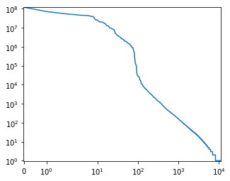

Софийски университет „Св. Климент Охридски“
Факултет по математика и информатика
Катедра „Компютърна информатика“
ДИПЛОМНА РАБОТА
Компресиране на някои представяния на знание с приложение на рекурентни невронни мрежи
Дипломант
Йоан Владимиров Карадимов
ф.н. 23393, магистърска програма „Изкуствен интелект“
Ръководител
доц. Калин Георгиев Николов
София, юли 2020
Анотация
С формализацията си на интелект, представена в книгата „Universal Artificial Intelligence. Sequential Decisions
Based on Algorithmic Probability“, Чарлз Хътър и други автори демонстрират връзката между изкуствен интелект и
компресия на данни. По този начин съпоставят нивото на компресия, което може да бъде постигнато за даден набор от
данни, с интелекта на агента който извършва компресията.
Тази дипломна работа предлага метод за постигане на компресия чрез комбинация от ентропийно кодиране и
вероятностен предсказващ модел. Моделът се базира на рекурентни невронни мрежи и бива обучен с голям обем човешко
знание, базирано на енциклопедията Wikipedia. Авторът мотивира нуждата от модел с минимален размер и предлага
подходи за постигането му. Изброяват се параметрите на модела и се изследва влиянието на тези параметри върху
способността на модела да научава и компресира данни.
1 Съдържание
- Съдържание
-
Въведение
- Математическо моделиране на интелекта
- Предмет на дипломната работа
- Цел на дипломната работа
-
Компресията като мярка на интелект
- Ентропия на Шанън и оптималната компресия
- Сложност по Колмогоров и универсална индукция на Соломонов
- AIXI и AIXItl
- Теорема за най-бърз и най-кратък алгоритъм
-
Наборите от данни enwikX
- MediaWiki page export format
- Wikitext
-
Изследване на данните
- Статии
- Възможни символи
- Малки и големи букви
- Заглавия
- Автори
- Дати на създаване
-
Приз на Хътър
- Текущи най-добри резултати
- Забележки относно правилата
-
Предложен подход за компресия на наборите от данни enwikX
-
Предварителна обработка на данните
- Предварителна обработка на метаданни
- Предварителна обработка на текст
-
Рекурентни невронни мрежи
- Класически подход и проблеми
-
Обработка на свойства (feature engineering)
- Размер на азбуката
- Размер на речник от под-думи
- Свръх-нагаждане (overfitting)
-
Провеждане на експерименти и анализ на резултатите
- Брой на категориите
- LSTM срещу GRU
- Способност за наизустяване
- Способност за предсказване
- Статистика на предсказанията
- Брой и размер на рекурентните слоеве
- Методи и материали
-
Заключение
- Резултати и дискусии
- Бъдещи цели
- Библиография
2 Въведение
Постигането на силен изкуствен интелект и обща интелигентност е една от задачите, с които изкуственият
интелект (ИИ) се сблъсква още от създаването си. Въпреки относително бурното развитие на ИИ през последните
години, прогресът в областта на общата интелигентност за момента е слаб. От части това може да се обясни с
хардуерни ограничения, лимитиращи способността ни да достигаме смислени практически резултати. От друга страна -
преди въобще да се търси смислен резултат в контекста на силния изкуствен интелект, трябва да бъде дефиниран
начин за проверка и тестване на въпросния резултат.
Добре известен е тестът на Тюринг . Но още в първата глава
"The Imitation Game" на основополагащата си статия, Тюринг отказва да се ангажира с дефиниция на интелект, като
вместо това избира да търси алтернативен въпрос. Подобен, но по-малко известен, е тестът на работното място
(The Employment Test), формулиран от Нилс Нилсън.
Целта е да се провери дали агент може да се справи поне толкова
добре колкото човек в служба, съществена за икономиката. Тестът на студента-робот (The Robot College Student
Test) на Бен Гьорцел цели да провери способността на агент
успешно да премине и завърши пълен университетски курс.
Множество други автори предлагат подобни тестове. И въпреки че много от тях представят интересни перспективи,
обединяващо е, че никой не предлага строга формализация или подход към решаването на проблема. Иначе казано -
изброените тестове дават крайна цел, но не и явна функция, която да оптимизираме, за да стигнем до силен
изкуствен интелект. За такова начинание, за начало, е нужна общоприета дефиниция на интелект. По темата,
Джон МакКарти казва: "Проблемът е, че като цяло, все още не можем да характеризираме кои изчислителни процедури да
наречем интелигентни". Липсата на такава
общоприета и твърда дефиниция на интелект оставя място за интерпретация, но и създава интересни възможности за
изследвания.
Математическо моделиране на интелекта
В книгата си Universal Artificial Intelligence: Sequential Decisions Based on Algorithmic Probability, в търсене на
числен модел на интелекта, Маркъс Хътър предлага формализма на универсалния алгоритмичен агент—AIXI.
AIXI е агент за обучение с утвърждение, чиято цел е да максимизира целева награда, оценена с число. Това се
извършва на базата на предишни действия, както и на взаимодействие с дадена среда, описана чрез машина на Тюринг.
Хътър доказва, че оптималното поведение на такъв агент е да предполага, че средата, с която взаимодейства,
е описана от най-кратката възможна програма.
Агентът не разполага с функцията, описваща средата в явен вид. Така неговата цел става построяването на най-малък
възможен модел на въпросната среда, базирайки се на взаимодействието си с нея. Тъй като такъв модел би бил описан
с програма, целта на агента, на практика, е да компресира наблюденията върху средата си до най-кратката такава
програма.
[...] being able to compress well is closely related to acting intelligently, thus reducing the slippery concept
of intelligence to hard file size numbers. In order to compress data, one has to find regularities in them, which
is intrinsically difficult.
[...] способността да се компресира добре е тясно свързана с възможността да действаш интелигентното. Така
неясната идея за интелигентност може да се сведе до размери на файлове и числа. А за да се компресират данни, е
нужно да се намерят закономерности в тях, което е трудно.
Разглеждането на компресия като еквивалентна на интелект предоставя мощен инструмент за оценка. Разполагайки с
набор от данни, способността за компресия на данните дава числова мярка на интелекта, който ги компресира.
Предмет на дипломната работа
През 2006-та година Маркъс Хътър стартира Приза на Хътър (Hutter Prize)
—практическа задача за компресия на човешко знание.
Целта на тази дипломна работа е да очертае подход за компресия, съвместим с изискването на състезанието. Това се постига,
като се строи модел за предсказване на данни, чрез използването на актуални изследвания и технологии.
Изследването набляга на прилагането на рекурентни невронни мрежи за строенето на модела—и
по-специално—LSTM и GRU. Тези архитектури са показали своята ефективност в предсказването на последователности
от данни.
Построените предсказващи модели дават оценки на вероятностите за възможни следващи символи в набора от данни.
Компресия се постига чрез ентропийно кодиране, като на символи с по-висока вероятност се
съпоставят по-кратки последователности от битове, а на по-малко вероятни—по-дълги. Разглеждат се кодиране
на Хъфман и аритметично кодиране, както и отражението им върху обработката на свойства,
което се прилага.
Интересен е въпросът—ако се сравняват алгоритми за компресия—какъв набор от данни да бъде избран.
Очевиден отговор е "цялото човешко знание". Но такъв отговор няма добра практическа стойност.
Нужна е някаква текстова репрезентация на възможно най-голяма част от човешкото знание.
Като еталонен тест Джим Бауъри предлага текстовото съдържание на
Wikipedia. Тя е един добър кандидат, тъй като
притежава съществен обем. От друга страна е подходяща заради отвореността и лесния достъп до данните ѝ.
Хътър подкрепя идеята и решава да използва Wikipedia за целите на Приза на Хътър.
Това е и практическият проблем, който разглеждаме—постигането на добра компресия на данните в Wikipedia.
В частност—върху набори от данни наречени enwikX, където X ∈ {5, 6, 7, 8, 9} и съдържа първите
10X байта от XML репрезентация на данните в Wikipedia.
Естествен въпрос е какво означава "добра" компресия. Често използвани мерки са "по-добра от съществуващия машинен подход",
както и "по-добра от човек". В контекста на силния изкуствен интелект, второто представлява по-голям интерес.
Изследвайки ентропия и компресия, Клод Шанън провежда експерименти с хора, опитвайки се да оцени способността
им да служат като модел за предсказване на текст. Използвайки 27 символа - буквите от латиницата в английския,
допълнени със символ за интервал - Шанън оценява способността на хората на еквивалентна на компресия в
границите между 0.6 и 1.3 бита за символ.
Махони провежда симулации с конкретни модели и оценява същата мярка на около 1 бит за символ, като добавянето на
пунктуация и разграничаването на големи/малки букви вдига мярката до 1.25 бита за
символ.
Необичайно в случая е, че избягването на свръх-нагаждането (overfitting) няма да бъде цел. Интересно е, че за
компресия чрез невронни мрежи може дори да бъде полезно.
Друго нехарактерно е ръчната обработка на свойства от данните.
Този подход, необходим за много от алгоритмите за машинно самообучение, обикновено се заобиколя при невронните мрежи.
Но в случая обработката на свойства се налага и има паралели с някои подходи при класически алгоритми за компресия.
Цел на дипломната работа
Тази дипломна работа си поставя редица цели. Следва описание на въпросните цели, като и разбиването им в план.
Във всяка от точките на плана са описани съответстващи им задачи, както и главите от работата, в които задачите са
решени.
Изследване на данните
В глава "4 Наборите от данни enwikX" се изследват наборите от данни, с които се оценява Hutter Prize. Първоначално
данните се разглеждат на високо ниво, като се обръща внимание на присъствието на два формални езика и един естествен
(английски) език, вложени един в друг. В последствие се обръща внимание на структурата и конкретни полета с метаданни.
Търсят се възможности за опростяване на потенциалните тренировъчни данни. Изследват се и детайли, които биха били
полезни на етап трениране на модел.
Формулиране на подход
В глава "6 Предложен подход за компресия на наборите от данни enwikX" се формулира груб подход за компресия,
като имплементационните детайли се оставят за по-късно. Обръща се внимание на начина за постигане на компресия,
както и на възстановяването на оригиналните данни при декомпресия.
Предварителна обработка на данните
В глава "7 Предварителна обработка на данните" се описва обработката на XML данните и отделянето на метаданните
от същинското текстово съдържание на статиите. Разглежда се наивна стратегия за компресиране на метаданните, която
не използва подходи от машинното самообучение и изкуствения интелект, но притежава интересни паралели с
преобразуванието на Бъроуз-Уилър. Текстовото съдържание се интерпретира като последователност от категории.
Разглеждат се начини за намаляване на броя на категориите и за съкращаване на последователността от категории.
Моделиране с невронни мрежи
В глава "6.2 Рекурентни невронни мрежи" се разглежда способността на рекурентни невронни мрежи да служат
като модели за предсказване на последователности от данни. Представят се резултати от други изследвания и се описва
общата им структура, таксономията им и развитието им във времето. Мотивира се избора на разглежданите архитектури
и се дават някои алтернативи. Дефинират се свръх-нагаждане (overfitting) и обработка на свойства (feature engineering)
и се описват начините, по които употребата им в предложения подход се различава от традиционните им приложения.
Провеждане на експерименти
В глава "9 Провеждане на експерименти и анализ на резултатите" се разглежда избора на конкретна архитектура на
рекурентни невронни мрежи. Изследват се хиперпараметрите на въпросните невронни мрежи - брой слоеве, размер на
слой за влагане, размер на рекурентен слой, както и по-общите хиперпараметри -
размер на азбуката от символи и брой на n-грами, които се разглеждат.
Заключение
В глава "11 Заключение" се правят изводи и се очертават насоки и бъдещи цели за изследване.
3 Компресията като мярка на интелект
През 1950 излиза публикацията на Алан Тюринг наречена „Изчислителни машини и интелект“[x].
В нея Тюринг задава фундаменталния въпрос „могат ли машините да мислят?“. Точният отговор на този въпрос изисква
точни определения на понятията „машина“ и „мислене“. Намеквайки, че това е изключително трудно, вместо определения,
Тюринг предлага своя „критерий за «мислене»“—известната „игра на имитиране“. Играта се играе от трима участници:
машина, човек и разпитвач (също човек). Разпитвачът може да общува с машината и човека писмено,
без да ги вижда или чува. И машината, и човекът се представят пред разпитвача като хора. Целта на разпитвача е,
задавайки им въпроси, да определи кой от двамата е машината и кой—човекът. Целта на човека е да помогне
на разпитвача, а целта на машината е да заблуди разпитвача, т.е. да имитира човека максимално добре.
Машината отговаря на критерия на Тюринг, ако успява да заблуди разпитвачите достатъчно често.
Мислещите машини, които има предвид Тюринг, не са произволни. Тюринг се интересува от цифровите изчислителни машини,
които по това време придобиват огромно значение, а днес са част от почти всеки аспект на живота ни.
За да изследва въпроса теоретично, той използва математически модел на изчислителни машини—добре известните
ни машини на Тюринг. Тези машини са въведени от него години преди това[x],
когато изследва „проблема за разрешимост“ на Хилберт и Акерман: има ли алгоритъм, който човек може да следва,
за да реши дали произволна формула от предикатната логика е тавтология или не? Т.е. в проблема за разрешимост,
Тюринг използва машините си за модел на човешки сметачи („human computer“), а в проблема за мислещите
машинни—за модел на машинни сметачи („digital computer“). Така се стига до следния алгоритмичен вариант на
проблема за мислещите машини: могат ли алгоритмите, изпълними от хора, да мислят? Това е основният теоретичен
проблем в областта на изкуствения интелект.
Тюринг предлага критерия си най-вече, за да провокира диалог около това дали машините могат да мислят[x].
И наистина, водещи учени от онова време откликват. Особено интересна е критиката на Клод Шанън и Джон Маккарти
към критерия на Тюринг. Двамата отбелязват, че принципно могат да бъдат събрани достатъчно пълни наблюдения на
всевъзможни въпроси и отговори (да речем от вече случили се игри на имитиране) в огромен „речник“
достъпен до машината. Разполагайки с такъв речник, машината може просто да поглежда отговора на всеки въпрос,
които разпитвачът ѝ задава по време на игра. Понеже речника е достатъчно пълен, това би заблудило разпитвачите
достатъчно, за да покрие критерия на Тюринг. Проблемът е, че по никакъв начин не бихме нарекли такава машина
мислеща. Тази забележка посочва важен недостатък в критерия на Тюринг. Въпреки че една такава машина би
била чудесен имитатор, на нея ѝ липсва важно свойство, присъщо на хората: способността да анализират нови ситуации.
Наистина, за да разболичим такъв имитатор, просто трябва да намерим клас от въпроси неприсъстващи в речника
и да ги подскажем на разпитвача. Това не е никак трудно, поради неизчерпаемостта на човешкия език.
Неспособността за анализиране на нови ситуации е пряко следствие от устройството на машината–речник.
Както казва Ада Лъвлейс относно аналитична машина на Чарлз Бабидж:
The Analytical Engine has no pretensions to originate anything. It can do whatever we know how to order it to perform.
Аналитичната машина не претендира да е първоизточник на нищо. Тя може да направи само това което ние знаем как да ѝ наредим да направи.
Можем да интерпретираме първата част на това твърдение (тази за първоизточника), като възражение срещу
възможността машините да мислят самостоятелно. Но всъщност, както отбелязва Дългас Хартри[x],
втората част на твърдението (тази за „нарежданията“) не подкрепя първата. Хартри не изключва да се създаде машина,
която може да мисли самостоятелно или пък дори да се учи. С други думи, машината може първоначално да следва
заложените ѝ „нареждания“, но след това, мислейки самостоятелно и учейки се, да се развие отвъд заложеното в нея.
Наистина, тази възможност не противоречи на втората част на твърдението на Лъвлейс: до каквото и да се развие
машината, ние все пак принципно можем да го разберем и да наредим същото на друга машина.
Цитирайки Хартри, Тюринг напълно се съгласява с него. Тюринг отбелязва, че основният проблем при създаването на
мислеща машина не е необходимата изчислителна мощ, която той вярва че може да се постигне. Основният проблем е способността ни
да програмираме една такава машина да мисли. Той предлага, вместо да създадем машина, която може да имитира мозъка на възрастен,
да създадем машина, която може да имитира мозъка на дете, надявайки се програмирането ѝ да е много по-просто.
Учейки такава машина–дете, ще можем да я развием до машина способна да имитира възрастен.
Така се стига до може би основният практически проблем в изкуствения интелект: как да създадем алгоритми, които могат да учат?
3.1 Проблем за индукцията, подход на Бейс–Лаплас
Проблема за обучението на алгоритми е твърде всеобхватен, за да бъде атакуван директно. Важен подпроблем е това
как хората правят връзката между причина и следствие. В най-опростен вид, причинно-следствените връзки могат да бъдат
изказани като универсални твърдения за заобикалящия ни свят, например „водата завира при 100 градуса по Целзий“.
Характерното за причинно-следствените връзки е, че те не са непременно верни, т.е. те не са тавтологии от рода на
„водата завира когато завира“. Понеже дедукцията от тавтологии ражда само тавтологии, формирането на такива връзки
изисква да се вземат предвид факти от опита със заобикалящия свят.
Например, твърдението, че водата завира при 100 градуса, изисква потвърждение в достатъчно много опити,
както и липсата на опити, сочещи противното. Такива изводи, от частното (опити) към общото (универсални твърдения)
са известни като индуктивни изводи, а процесът на извеждане—индукция.
Изследвайки формирането на причинно-следствени връзки, Дейвид Хюм прави доста изненадващо наблюдение: индукцията
не може да бъде сведена до дедуктивна логика. Не съществува верен „принцип на индукцията“, който комбиниран
със факти, извлечени от опита, да позволява чрез чисто дедуктивни разсъждения да стигнем до индуктивен извод.
Аргументът на Хюм е неформален. Според него такова свеждане изисква заобикалящият ни свят да бъде по-еднообразен
отколкото е: валиден принцип на индукцията би предполагал бъдещето твърде силно да прилича на миналото. Проблемът за индукцията е да се покаже,
че всъщност индукцията може да се сведе до дедуктивна логика. И до ден днешен няма консенсус по въпроса.
Самият Хюм вярва, че човешката способност за индукция е вроден навик, неподкрепен от нищо рационалноx.
Независимо един от друг, Томас Бейс и Пиер-Симон Лаплас, задават друг въпрос относно причинно-следствените връзки:
колко вероятни са те? По-точно, ако h е хипотетична връзка, а x са данни от опити,
пита се колко е вероятна хипотезата при дадените данни? Отогворът е известното равенство:
Чрез това равенство, правата зависимост от причинно-следствена връзка към опити може да бъде „обърната“,
позволявайки извеждането на най-вероятните връзки съвместими с дадени опити. Това изисква преминаването от
класически модели на света към вероятностни модели: всяка хипотеза h е твърдение, което напълно
определя вероятността P(x|h) на данните при условие, че хипотезата е вярна. При сравнение на различните
хипотези безусловната вероятност P(x) на данните не е нужна, понеже не зависи от хипотезата и може да се съкрати.
Остава да се определи само априорната вероятност P(h) на всяка от хипотезите. В общия случай тази вероятност
е неизвестна и бива заместена с приближение, изразяващо частичното знание или уклона на този, който прави извода.
При пипсата на знание, Лаплас предлага P(h)=1 за всяка хипотеза, въпреки че в общия случай това води до
невалиден избор на вероятностна мярка.
Лаплас дава чудесен пример[x] за приложението на подхода
при определянето дали даден обект е резултат от регулярен или от случаен процес.
Ако на някоя маса видим множество от букви подредени в низа „константинопол“, коя от следните хипотези е по-вероятна:
h1—човек умишлено да ги е подредил в този ред, или h2—подредбата да е резултат от случаен процес, да речем равновероятно
измежду 14 буквените низове? Понеже не знаем коя от двете хипотези е по-вероятна, полагаме P(hi)=1, i=1..2.
При равновероятния процес, низът „константинопол“ има точно същата вероятност—30-14—както
и всеки произволен нерегулярен низ, например анаграмата му „сннтлкиоаотноп“. От друга страна, първата е обикновена дума
от речта, макар и не толкова често срещана, докато втората не просто не присъства във речта, а дори и трудно се произнася.
Много по-вероятно е човек да подреди буквите в първия низ, отколкото във втория. Не само това, но и вероятността човек
да произведе първия низ е много по-голяма от вероятността случаен процес да го произведе:
Тогава P(h1|„константинопол“) ≫ P(h2|„константинопол“), т.е. по-вероятно е човек
да е подредил думата, отколкото това да е резултат от чисто случаен процес.
3.2 Соломонова индукция и Колмогорова сложност
Основният недостатък при подхода на Бейс-Лаплас е неяснотата около избора на априорна вероятност P(h).
Поддръжниците на този тип индуктивен извод основно се делят на два лагера. Първите твърдят, че изборът на априорната вероятност
е напълно субективен и изразява вярванията на избиращия. Т.е. за тях подхода е консистентен начин за индуктивен извод от
субективни предположения или вярвания. Поддръжниците в другия лагер са против субективния елемент и се опитват да поставят
подхода на Бейс-Лаплас на обективни основни. Може би най-подробният опит за това е работата на Рудолф Карнап[x][x].
Карнап създава вероятностно смятане базирано на формална логика. В смятането възможните състояния на света се описват от
специален клас логически формули. Комбинирани една с друга, формулите от този клас могат да изразят сравнително широк клас от хипотези.
Всяка вероятностна мярка върху специалния клас се разширява до вероятностна мярка m върху класа
от изразими хипотези. Както и при подхода на Бейс-Лаплас, индуктивните изводи следват от максимизирането на условната вероятност
m(h|x) на хипотезата h при условие данните x. Понеже и хипотезите и данните се описват еднотипно
чрез логически формули, е по-лесно да се работи директно със съвместната вероятност:
Разбира се, ключовият въпрос е как да се избере вероятностната мярка m? Карнап постига няколко интересни резултата,
но никой от тях не е задоволителен и те не биват широко възприети[x].
Опитвайки се да базира индукцията на обективни критерии, Рей Соломонов развива подхода на Карнап в революционно нова посока[x][x][x].
Соломонов предполага, че данните в опитите се генерират от изчислителен процес. Неизвесните хипотези са не логически
формули, както при Карнап, а алгоритми. Соломонов допълнително предполага принципа на Окам в следния вид:
по-простите хипотези, т.е. по-простите алгоритми, са по-вероятни от по-сложните. За да реализира това предложение
Соломонов фиксира произволна универсална машина на Тюринг U, която служи като универсален програмен език за
описание на алгоритмите. Разглежданите алгоритми h не обработват входни данни (т.е. описват затворени светове),
а само произвеждат изход x=U(h) или пък въобще не терминират. За сложност на даден алгоритъм h Соломонов
взима неговата дължина l(h). Принципът на Окам се реализира чрез следната мярка:
Особеното тук е, че така дефинираната мярка m всъщност не отговаря на условията за вероятностна мярка. Вероятностите на всички
хипотези не се сумират до единица, а дори може да се окаже, че сумата им е безкрайна. За да се осигури крайност, могат
да се приложат различни подходи. Най-простият, предложен от Грегори Чайтин[x],
е универсалната машина U да се избере така, че да няма два терминиращи алгоритъма, които да са префикс един на друг.
С други думи, работим с универсален програмен език, в който нито една програма не е префикс на друга програма. В такъв случай,
неравенството на Крафт гарантира, че сумата е по-малка или равна на единица. Сумата е равна на известната Чайтинова константа Ω,
която дава вероятността, случайно генериран алгоритъм, да терминира. Понеже не всички алгоритми терминират, константата Ω
е строго по-малка от единица, т.е. мярката m е подвероятностна мярка. Соломонов предлага лесен начин за нормализация
до вероятностна мярка, който води до еквивалентна теория. Все пак мярката m е по-предпочитана, защото с нея се работи по-лесно.
За Соломонов индуктивният извод на хипотеза-алгоритъм h всъщност е само междинна цел. Крайната му цел е
предсказването на резултати от бъдещи опити, използвайки резултати от минали опити. По-конкретно, той използва мярката
m за предсказване на възможните продължения на наблюдавани редици. Например, на въпроса как да бъде продължена
редицата
човек обикновено би отговорил (след малко сметки) 73, понеже дадената редицата се състои от първите 19 прости числа
и следващото просто число е 73. Подхода на Соломонов дава обективен довод за този тип изводи. Интуицията е, че ако дадените
първи n прости числа са достатъчно много, то всички кратки (и съответно вероятни) алгоритми, които генерират поне
първите n прости числа, съдържат в себе си кратък алгоритъм за генериране на всички прости числа. Тогава е необходим
по-малко допълнителен код, за да се продължи с генерирането на първите n+1 прости числа, отколкото другояче.
Алгоритмите с по-малко допълнителен код са по-вероятни от друргите, и съответно е по-вероятно редицата да
продължи с следващото просто число, отколкото с нещо друго, генерирано от по-малко вероятен алгоритъм.
За да се развие тази интуиция до общ метод, трябва да се обърне внимание на една подробност. В общия случай,
предсказанията на най-вероятните хипотези не винаги са най-вероятни. Това може да се получи, когато група по-малко
вероятни хипотези правят едно и също предсказание, което се различава от това на най-вероятната, но общата вероятностна
маса на тази група е по-голяма от тази на най-вероятната хипотеза. Затова Соломонов предлага предсказанията да се
извършват не на базата на най-вероятната хипотеза, а на най-вероятното продължение. Това продължение се определя от
разширението на мярката m от хипотези h до редици x:
Математически, подходът на Соломонов се изразява като предсказване на символите на случайна редица T.
Всяка фиксирана редица x задава случайното събитие x*={x⪯T} редицата T да започва с x.
Вероятността на това събитие е
Вероятността редицата
T да продължи с
y при условие, че е започнала с
x се задава с условната
вероятност
Така метода на Соломонов взима предвид всички хипотези съвместими с наблюденията, а не само най-вероятната.
Това е реализация на древния принцип на епикурейците за множеството обяснения. Прецезирайки Лукреций[x],
въпреки че измежду всевъзможните теории обясняващи дадени наблюдения само една рисува пълната картина,
то няма полза да се твърди коя е тя без допълнителни сведения.
Целта на Соломонов е универсален метод за индуктивни. И наистина, мярката m има няколко уникални свойства,
които оправдават такава квалификация. Леонид Левин показва[x],
че мярката m доминира всяка полуизчислима подвероятностна мярка p с точност до мултипликативна константа cp:
Левин също така прави връзката между m и префиксния вариант на Колмогоровата сложност, която е дължината К(x)
на най-кратката програма, която генерира дадена редица. Логаритъма на m е равен на K с точност до константа:
Това показва, че предсказания могат да се правят и на базата на Колмогоровата сложност, приближавайки m(x) с 2-K(x).
Така приципа на Окам придобива по-явен, неворятностен вид: при предсказание избираме това продължение y на x, което води до
най-малка сложност на xy.
След резултатите на Левин, Соломонов успява да докаже, че при достатъчно данни,
m прави приблизително оптимални предсказания. По-точно, ако случайната редица T се генирара със
изчислима вероятностна полумярка p, то с течение на времето разликата между предсказанията
на m и на p клони към нула. Този резултат оправдава квалификацията на m като универсалната априорна вероятност.
4 Наборите от данни enwikX
Съществуват няколко набора от данни, носещи подобните имена: enwik6, enwik7, enwik8,
enwik9 и enwik10. Общият вид на имената е enwikX, където X ∈ {5, 6, 7, 8, 9}. Всеки от тях
представлява първите 10X байта от една определена текстова репрезентация на свободно достъпната
енциклопедия Wikipedia. Данните са взети единствено от англоезичната версия.
Въпросните набори от данни са широко използвани в
изследвания в областта на ИИ, и по-конкретно - в областите на моделиране и синтез на естествени езици. Честият
избор на набори от данни базирани на Wikipedia при тези изследвания е продиктуван от няколко фактора:
-
Данните са достъпни под два лиценза - "GNU Free Documentation License" и "Creative Commons Attribution-ShareAlike".
И двата позволяват употребата и разпространението на данните с много малко ограничения.
-
Данните имат относително високо качество, често с множество автори и редактори за всяка от статиите.
-
Данните са взети от файл, чийто оригинален размер е 4.8 GiB - над 2 500 000 страници текст, при 2000
символа на страница - безспорно значително количество текст.
Трябва да се отбележи, че данните са във вида, в който са съществували в Wikipedia на 3 март 2006. Към момента
обемът на Wikipedia е над 4 пъти по-голям. Разумно е и да спекулираме, че качеството на статиите се е повишило.
Но въпреки това, enwikX не се обновяват – това гарантира консистентност на изследванията във времето.
4.1 MediaWiki page export format
Преди започване на изследване на данните, е добре да се разгледа репрезентацията им. Вече беше споменато, че
наборът от данни е текстов, но не беше уточнен конкретен формат и съдържание. Те ще бъдат предмет на интерес
занапред в дипломната работа и си заслужава да бъдат разгледани по-подробно. Първите 15 реда могат да бъдат
получени с Unix командата "head -n 15 enwik9":
<mediawiki xmlns="http://www.mediawiki.org/xml/export-0.3/" xmlns:xsi="http://www.w3.org/2001/XMLSchema-instance" xsi:schemaLocation="http://www.mediawiki.org/xml/export-0.3/ http://www.mediawiki.org/xml/export-0.3.xsd" version="0.3" xml:lang="en">
<siteinfo>
<sitename>Wikipedia</sitename>
<base>http://en.wikipedia.org/wiki/Main_Page</base>
<generator>MediaWiki 1.6alpha</generator>
<case>first-letter</case>
<namespaces>
<namespace key="-2">Media</namespace>
<namespace key="-1">Special</namespace>
<namespace key="0" />
<namespace key="1">Talk</namespace>
<namespace key="2">User</namespace>
<namespace key="3">User talk</namespace>
<namespace key="4">Wikipedia</namespace>
<namespace key="5">Wikipedia talk</namespace>
Моментално е видно, че става въпрос за XML-базиран формат. Форматът се нарича
MediaWiki page export format,
описан е в XML схема
[x], и съдържа статии, метаданни за
статиите, както и общи метаданни. Откъсът по-горе описва общи метаданни, и по-специално в случая – името на
сайта, адреса му, версията на използвания формат, както и част от основните секции в Wikipedia.
Трябва да бъде отбелязано, че никой от enwikX наборите от данни не представлява валиден XML документ.
Причината е, че всеки от тях съдържа определено количество данни, започващи от началото на валиден документ
от тип MediaWiki page export format. Взимането на съдържание единствено от началото и изрязването му от края
води до незатворени XML етикети. Това от своя страна неизбежно води до споменатата липса на валидност.
По-напред в съдържанието се намират данни и за самите статии. Например - редове от 120 до 140 могат да бъдат
разгледани чрез "head -n 120 enwik9 | tail -n 20"
</revision>
</page>
<page>
<title>AdA</title>
<id>11</id>
<revision>
<id>15898946</id>
<timestamp>2002-09-22T16:02:58Z</timestamp>
<contributor>
<username>Andre Engels</username>
<id>300</id>
</contributor>
<minor />
<text xml:space="preserve">#REDIRECT [[Ada programming language]]</text>
</revision>
</page>
<page>
<title>Anarchism</title>
<id>12</id>
<revision>
Това е статия за програмния език Ада. Като метаданни могат да бъдат открити името на статията и уникалният ѝ числов
идентификатор. Прави впечатление XML етикетът
<revision>. Причината за съществуването му е, че Wikipedia
поддържа история от редакциите на всяка статия, наричани ревизии. В
enwikX наборите от данни
винаги присъства единствено последната ревизия. Това е и мястото, на което могат да бъдат открити някои от
най-важните данни - уникален числов идентификатор на ревизията, време на създаване, автор, индикация дали
редакцията е малка, коментар (липсващ тук), и текст на статията.
4.2 Wikitext
В примера по-горе, текстът на примерната статия е "#REDIRECT [[Ada programming language]]". Очевидно пунктуацията
и специалните символи са повече, отколкото бихме очаквали от текст на естествен език. Причината е, че текстът е
във формат Wikitext—маркиращ език, специално създаден за целите на Wikipedia.
Форматът позволява декларирането на секции, подсекции, връзки към други статии и техни секции, автоматично
пренасочване към други статии и техни секции, влагане на изображения, списъци с подточки, таблици и други.
Между редове 135 и 140, например, може да бъде открито:
The word '''anarchism''' is [[etymology|derived from]] the [[Greek language|Greek]] ''[[Wiktionary:&#945;&#957;&#945;&#961;&#967;&#943;&#945;|&#945;&#957;&#945;&#961;&#967;&#943;&#945;]]'' ("without [[archon]]s (ruler, chief, king)"). Anarchism as a [[political philosophy]], is the belief that ''rulers'' are unnecessary and should be abolished, although there are differing interpretations of what this means. Anarchism also refers to related [[social movement]]s) that advocate the elimination of authoritarian institutions, particularly the [[state]].<ref>[http://en.wikiquote.org/wiki/Definitions_of_anarchism Definitions of anarchism] on Wikiquote, accessed 2006</ref> The word "[[anarchy]]," as most anarchists use it, does not imply [[chaos]], [[nihilism]], or [[anomie]], but rather a harmonious [[anti-authoritarian]] society. In place of what are regarded as authoritarian political structures and coercive economic institutions, anarchists advocate social relations based upon [[voluntary association]] of autonomous individuals, [[mutual aid]], and [[self-governance]].
While anarchism is most easily defined by what it is against, anarchists also offer positive visions of what they believe to be a truly free society. However, ideas about how an anarchist society might work vary considerably, especially with respect to economics; there is also disagreement about how a free society might be brought about.
Откъсът съдържа примери за връзки към други статии и техни секции (оградени с двойни квадратни скоби), удебелен
текст (тройки кавички) и други. Присъствието на толкова много специални символи, поставя под въпрос
съпоставимостта с базовата оценка от между 0.6 и 1.3 бита за символ, която Шанън дава.
Оценката, както вече беше споменато, е за азбука от 27 символа, която игнорира числа, пунктуация, големи и малки букви
и други възможно специални или служебни символи. Това поставя въпроса - какво може да бъде видяно в данните?
4.3 Изследване на данните
Изследването на данните е стандартен подход и цели първоначално запознаване с данните и постигане на определено
ниво на разбиране за предметната област. Търсят се проблеми в данните, обръща се внимание на обема им, на
присъствието на каквито и да е зависимости, статистически разпределения или скрита структура. Идентифицират се и
части от тях, които биха представлявали интерес при по-обстойно изследване. Всичко това се постига с поредица
кратки програми и с помощта на визуални репрезентации[x].
Разглеждайки enwikX наборите от данни, както и тяхната XML схема, може да се достигне до списък от имена на
полета с метаданни. В търсенето на подход за компресия, от значение са типовете на въпросните метаданни. Чрез
кратка помощна програма са изчислени и приложени сумарните размерите на данните, разбити по поле. В размера са
включени XML етикети, XML атрибути, както и водещите интервали преди тях.
-
Общи метаданни:
Метаданни, които не са конкретни за определена статия, а общи за набора от данни.
Размер в байтове: 1 403
-
Заглавие на статия
Текстов низ, съдържащ заглавието.
Размер в байтове: 9 221 250
-
Ограничения върху статията
Текстов низ в специфичен формат, описващ забрани за редактиране, преименуване и други.
Размер в байтове: 46 572
-
Идентификатор на статия
Число, уникално идентифициращо статия.
Размер в байтове: 4 782 069
-
Идентификатор на ревизия
Число, уникално идентифициращо ревизия на статия.
Размер в байтове: 5 842 240
-
Дата на създаване на ревизия
Текстов низ във формат ISO 8601, отбелязващ дата и време на създаване на ревизията.
Размер в байтове: 12 171 350
-
Автор на ревизия
Вложен XML елемент, съдържащ или потребителско име и идентификатор на автор, или низ с IP адреса му.
Размер в байтове: 23 850 049
-
Флаг за малка ревизия
Празен XML елемент, чието присъствие индикира, че промяната в ревизията е малка.
Размер в байтове: 1 581 072
-
Коментар към ревизия
Текстов низ, съдържащ коментари към ревизията.
Размер в байтове: 5 582 279
-
Текст за ревизията
Текстов низ, с текста на ревизията на статията.
Размер в байтове: 898 105 843
Оставащото място е заето от отварящи и затварящи XML етикети, отнасящи се за всяка от статиите.
Естествено е опитите за компресия да бъдат концентрирани върху частта от данните, която заема най-много място.
Не е изненадващо, че огромната част от данните са в текстовете на статиите. Относително голямо място заемат и
метаданните за авторите. Трети по размер са датите на създаване. Четвърти—заглавията на статиите.
Тези, най-големи по обем, части от данните се изследват допълнително.
4.3.1 Статии
Общият брой статии е 243 427. След премахването на XML етикетите и атрибутите остава текст с размер
888 134 586 байта. След декодирането на UTF-8, в който е записан текстът, броят символи става
885 671 734. Средният брой символи за статия е приблизително 3 638.35, Максималният e 738 818,
а минималният е 0. При работа с данните трябва да се обърне внимание на въпросните празни статии, като бъдат
пропуснати или обработени по по-специфичен начин.
(фиг. 1)
 (фиг. 2)
(фиг. 2)
На фиг. 1 по хоризонтала са изобразени възможните дължини на статии, а по вертикала - броят статии със
съответната дължина. Причината графиката на пръв поглед да изглежда празна, е че кривата плътно следва
абсцисната и ординатната оси. Това ни подсказва, че съществуват малък брой много дълги статии, но огромната част
от статиите са относително кратки.
Данните придобиват малко повече смисъл, ако изобразим възможните дължини на статии по логаритмична скала
(фиг. 2). Тогава кривата започва да прилича на нормално разпределение. Това подсказва за
доближаване до логнормално разпределение (разпределение на Галтон) в дължините на статиите.
Наблюдава се мода на разпределението при около 30 символа за статия. Освен това повечето статии имат
под 100 символа. Това подсказва, че по-късно, при формирането на партиди от данни, дължини над 100
би трябвало да са достатъчни, за да бъде трениран моделът с цялостния текст на повечето статии.
4.3.2 Възможни символи
Броят символи, които се срещат в текстовете на статиите, е 10 797. Във фиг. 3 е представена честотата
на срещане на всеки символ. Най-вляво по хоризонтала са изобразени най-често срещаните символи, а
най-вдясно—най-рядко срещаните, като скалата е логаритмична (т.е. на числото n отговаря n-тия
най-често срещан символ). По вертикала е изобразен броят срещания за всеки символ—отново върху
логаритмична скала.

(фиг. 3)
За такъв тип данни очакваме да важи емпирично установеният закон на Ципф[x].
Върху логаритмично-логаритмична графика това би изглеждало като права линия от най-често срещания символ (горе-ляво)
до най-рядко срещания (долу-дясно). Откриваме интересно отклонение в рамките на първите 100 символа. Освен това
е интересно, че ако разгледаме единствено 10-те най-често срещани символа, те изпълняват закона на Ципф.
С известно отклонение същото може да се каже и за първите 90 символа.
Първоначалната интуиция на автора е, че първите 10 символа изпъкват, защото са част от Wikitext синтаксиса.
При проверка се оказва, че символите са: интервал и буквите e, a, t, i, o, n, r, s, l.
Интуицията е невярна. Но в рамките на следващите 90 символа могат да бъдат видени символите от Wikitext синтаксиса.
Също така там се среща цялата латиница, всички десетични цифри, много пунктуационни знаци и кирилската буква и.
 (фиг. 4)
(фиг. 4)
Интересен е и друг прочит на данните. Графиката във фиг. 4 изброява по хоризонтала символите по честота на
срещане—подобно на фиг. 3, но този път по линейна скала. За всеки символ по вертикала са разположени
сумата от броя срещанията на въпросния символ, както и броят срещания на всички по-рядко срещани от него символи.
Така фиг. 4 до известна степен прилича на графика на дискретното кумулативно разпределение, но ротирано
около ординатната ос. Изобразени по този начин, данните могат да отговорят на въпроса:
ако се вземе подмножеството от n на брой най-често срещани символа,
каква част от символите в набора от данни
ще бъдат извън въпросното множество?
Например:
-
ако се вземат първите 2 000 символа, ще останат приблизително 105 символа в набора от данни,
които не са сред тези 2 000 символа;
- Ако се вземат 6 000 символа, ще останат приблизително 104;
- При 10 000 символа, ще останат приблизително 103.
В граничните случаи:
- ако се вземат всички символи, ще останат 0 невзети (долу-дясно в графиката);
- ако не се вземат никакви символи, всички ще останат невзети (горе-ляво в графиката).
Тази интерпретация намира приложение в глава "9.1 Брой на категориите".
4.3.3 Малки и големи букви
Интересен е един от подходите, приложен в алгоритъма nncp[x]. Във въпросния
алгоритъм Фабрис Белар използва предварителна обработка на текстови файлове, директно взета от имплементацията
на алгоритъма cmix[x]. Една от стъпките е всички букви да бъдат превърнати
в малки.
За брой на символите се получава 10 333. Това е само с 464 по-малко от броя на всички символи. Изглежда огромната
част от символите нямат съответстваща малка буква. Това може да бъде обяснено както с пунктуационни или специални
символи, така и със символи от писмености които не разграничават малки от големи букви (напр. много източно
азиатски писмености). Но в случая чистата бройка не е от такова значение. По-голям интерес представляват
разпределението и плътността.
 (фиг. 5)
(фиг. 5)
 (фиг. 6)
(фиг. 6)
На фиг. 5 и фиг. 6 са изобразени графики аналогични съответно с фиг. 3 и фиг. 4.
Със син цвят са изобразени данните от фиг. 3 и фиг. 4, а в оранжев цвят са наложени данните получени
при преобразувани главни букви към малки. Двете криви се движат плътно заедно. В такъв мащаб е трудно да се
забележи смислена разлика.
Разликата става по-очевидна, когато се разгледат първите 200 най-често срещани символа в двата случая.
Кривата за тях е изобразена на фиг. 7. Данните са идентични с тези в горната лява част на фиг. 6.
Ако големите букви бъдат запазени, е възможно с около 100 символа да се обхванат над 99% от всички символи в
набора от данни. Ако бъдат взети единствено малки букви, същото може да бъде постигнато с около 70 символа.
Ползите, които могат да бъдат извлечени, се разглеждат в глава "9.1 Брой на категориите".
4.3.4 Заглавия
(фиг. 8)
(фиг. 9)
След премахването на XML етикетите, общата дължина на заглавията в байтове е 4 596 137, а в
символи—4 590 258. Естествено, броят заглавия е колкото броя статии—243 427.
Най-дългото заглавие е 188 символа, а най-краткото—0. Подобно на текста на статиите, и при заглавията
присъстват празни данни.
На фиг. 8 по хоризонтала са изобразени възможните дължини на заглавия, а по вертикала - броят заглавия
със съответната дължина. По подобие на текста на статиите наблюдаваме доближаване до логнормално
разпределение—по-добре видимо на фиг. 9.
Броят уникални символи е 275—драстично по-малко от същата мярка при статиите. Очевидното обяснение е, че
в английската Wikipedia има основно заглавия на английски. Докато в пълния текст на статията има препратки,
етимологии и всевъзможни връзки към други езици.
4.3.5 Автори
За всяка от статиите присъства запис с автор на ревизията. Общо - 243 427 записа за автор. При проверка с
кратка програма може да бъде открито, че голямата част от авторите се повтарят. Броят на уникалните записи е:
- 19 506 записа с потребителско име и числов идентификатор
- 26 258 записа с IP адрес
- 12 записа на интервали от IP адреси, записани като IP адрес (например - "129.33.49.xxx")
- 7 записа със служебен автор, записани като IP адрес (например - "Conversion script")
Общият брой силно надвишава броя на уникалните автори—има 45 783 уникални записа, което е приблизително
19% от всички. С проста дедупликация може да бъде извлечена известна компресия.
Това се прилага в глава "7 Предварителна обработка на данните".
4.3.6 Дати на създаване
Както вече беше споменато, в данните се използва форматът ISO 8601, например: "2005-12-27T18:46:47Z". Времевата
резолюция е секунди. Максималната стойност е "2006-03-04T06:14:28Z", а минималната—"2002-02-25T15:43:11Z".
Тези данни се обработват в "7 Предварителна обработка на данните".
5 Hutter Prize
През 2006-та година, Маркъс Хътър стартира Приза на Хътър (Hutter Prize)
—практическа задача за компресия на човешко знание. Самата задача променя правилата си във времето.
Правилата, очертани в текущата итерация на Hutter Prize, са следните:
-
да се създаде компресираща програма, която да компресира определен набор от данни и да произведе декомпресираща програма;
-
изпълнението на декомпресираща програма да произведе файл идентичен на оригиналния набор от данни;
-
компресирането и декомпресирането да се изпълняват сумарно за по-малко от 100 часа, да заемат по-малко от 10GiB
оперативна памет и по-малко от 100GiB дисково пространство;
-
да се постигне възможно най-малка сума от размерите на компресираща и декомпресираща програми.
5.1 Текущи най-добри резултати
В текущия си вид, Hutter Prize има единствен победител—Александър Ратушняк на 4 юли 2019 с алгоритъма
phda9 (версия 1.8). Достигнатият размер е 116 673 681 байта[x].
В предишни итерации на състезанието, когато използваният набор от данни е enwik8, победители са:
- 4 ноември 2017 - Александър Ратушняк. Размер—15 284 944 байта, достигнат с алгоритъма phda9;
- 23 май 2009 - Александър Ратушняк. Размер—15 949 688 байта, достигнат с алгоритъма decomp8;
- 14 май 2007 - Александър Ратушняк. Размер—16 481 655 байта, достигнат с алгоритъма paq8hp12;
- 25 септември 2006 - Александър Ратушняк. Размер—байта, 17 073 018 достигнат с алгоритъма paq8hp5;
- 24 март 2006 - Мат Махони. Размер—18 324 887 байта, достигнат с алгоритъма paq8f.
Всички тези алгоритми използват модел за предсказване на вероятности. Вероятностите се използват като входни данни
на алгоритъм за ентропийно кодиране. Това е стандартен подход, използван и в тази дипломна работа. Повече
имплементационни детайли са описани в глава "6 Предложен подход за компресия на наборите от данни enwikX".
Друго общо за алгоритмите е, че спадат в категорията на подходи за компресия със смесване на контексти.
При тях има няколко статистически модела, които дават независими предсказвания за следващи категории. Категориите
могат да бъдат байтове или символи, но обикновено се работи на ниво битове. Вероятностите получени от всеки от
моделите се смесват по определен начин и се получават окончателни вероятности за всяка
категория.
Интересен е и алгоритъмът cmix, който постига размер 14 838 332 байта за enwik8 и
115 714 367 байта за enwik9. С такъв резултат cmix би бил първи, но не се вмества в
изискванията за време и памет—за enwik9 са му нужни приблизително 334 часа и приблизително 25GiB
оперативна памет.
Подходът при него отново е смесване на контексти, но един от няколкото модела, които участват, е LSTM рекурентна
невронна мрежа.
Алгоритъм, който вече беше споменат в друг контекст е
nncp. Алгоритъмът отново е комбинация от предсказващ
модел и ентропийно кодиране. Постигнатият резултат е 119 167 224 байта
.
Причината да представлява интерес е, че за модел се използва единствено LSTM рекурентна невронна мрежа.
И въпреки че не постига най-добър резултат, той все пак успява да се доближи до него, и демонстрира приложимостта
на подхода.
5.2 Забележки относно правилата
За да бъде предложеният подход за компресия съвместим правилата на Приза на Хътър, трябва преди всичко да
имплементира компресия без загуби. Доброто представяне във времето също е фактор, който трябва да
се вземе предвид. Но това не е първостепенна цел. В голямата част от случаите, ще бъде счетено, че 100 часа
време за изпълнение са напълно достатъчни, без да се навлиза в изчисления и оценки на предложения подход.
Времето за изпълнение се споменава изрично като проблем, единствено когато проблем е установен в резултат на
практически експерименти.
От първостепенно значение остават размерите на компресиращата и декомпресираща програми. Но за да бъде давана
оценка на размерите, първо трябва да бъде предложен конкретен подход.
6 Предложен подход за компресия на наборите от данни enwikX
Построените предсказващи модели дават оценки на вероятностите за възможни следващи символи в набора от данни.
Компресия се постига чрез ентропийно кодиране, като на символи с по-висока вероятност се
съпоставят по-кратки последователности от битове, а на по-малко вероятни—по-дълги. Разглеждат се кодиране
на Хъфман и аритметично кодиране, както и отражението им върху обработката на свойства, което прилагаме.
За целите на компресията, всеки символ от азбуката на възможни символи се разглежда като категория.
А цялостният текст се разглежда като дискретна последователност от категории.
Компресирането и декомпресирането на тази дискретна последователност от категории се случва чрез ентропийно кодиране.
Съществуват различни алгоритми за ентропийно кодиране, като някои примери са кодиране на Шанън,
кодиране на Шанън-Фано, кодиране на Хъфман,
аритметично кодиране,
интервално кодиране и други.
Общото за ентропийните кодирания е, че съпоставят по-кратки последователности от битове на по-вероятни символи, а
на по-малко вероятни—по-дълги. За да се реализира ентропийно кодиране е необходим вероятностен модел и има
много различни начина да се определи такъв—вериги на Марков, скрити модели на Марков, n-грамни модели и т.н.
В тази дипломна работа изследваме построяването на модел, използващ рекурентни невронни мрежи.
Те са избрани заради способността им да запомнят зависимости, както краткосрочно, така и
дългосрочно, както и да
предсказват категории, отчитайки контекст.
В допълнение на това, описаният по-нагоре подход се прилага единствено за заглавието и текстовото съдържание на
всяка от статиите. За останалите полета от XML набора от данни (описани в "4.3 Изследване на данните"),
се прилага отделна обработка, описана в "7 Предварителна обработка на данните".
По описания начин получаваме следния алгоритъм за компресия:
- Обработва се XML набора от данни, извличат се полетата, и се отделят заглавието и текстовото съдържание от метаданните.
- Метаданните преминават през отделна обработка и се записват в декомпресиращата програма
- Заглавието и текстовото съдържание се конкатенират, а след това, от тях се получава дискретна последователност от категории.
- Категории се оформят в партиди от данни и се използват за трениране на рекурентна невронна мрежа
- Полученият предсказващ модел се записва в декомпресиращата програма
-
За всяка от категориите в дискретна последователност:
- Подаваме текущата категория на модела
- Взимаме двойките категория-вероятност, които моделът предсказва
- Подаваме текущата категория и двойките категория-вероятност на избраното ентропийно кодиране
- В декомпресиращата програма записваме низа от битове, върнати от ентропийното кодиране
- Повтаряме докато има оставащи категории
Трябва да се отбележи, че никъде в компресирания файл не присъстват вероятностите, нужни за ентропийно кодиране.
Вместо това те се изчисляват от модела на всяка стъпка.
Получаваме и следния алгоритъм за декомпресия:
- Декомпресиращата програма изчита поредсказващия модел.
-
За всеки от битовете, получени при ентропийно кодиране:
- Взимаме двойките категория-вероятност, които моделът предсказва
- Четем битове докато получим еднозначна категория (спрямо ентропийното кодиране)
- Запомняме получената категория в списък от категории
- Подаваме получената категория на модела
- Повтаряме докато има оставащи битове
- Декомпресиращата програма изчита метаданните.
- Комбинираме метаданните и списъкът от получени категории, за да реконструираме оригиналните данни
В следващите няколко глави ще бъдат разгледани отделните аспекти на така описания подход и отражението им върху
крайната компресия:
-
предварителната обработка на метаданните;
-
размер на модела;
-
точността на предсказвания на модела и информационната ентропията, която ни дава;
-
практическата ентропийна компресия (ненадвишаваща информационната ентропията), която достигаме.
7 Предварителна обработка на данните
Целта на тази част от компресията е да се отделят голямата част от полетата от набора от данни и за обучението на
модела да се оставят единствено заглавието и текстовото съдържание от метаданните.
7.1 Предварителна обработка на метаданни
За обработка на метаданни за статии, трябва XML набора от данни първо да премине през синтактичен анализ.
Голяма част от данните са повтарящи се имена на етикети и атрибути, които имат твърда структура.
Достатъчно е да се запази реда на полетата, за да се възстанови оригиналното XML съдържание в декомпресиращата програма.
По този начин остават единствено данните в полетата, описани в глава "4.3 Изследване на данните".
Те могат грубо да бъдат интерпретирани като матрица във вид:
|
заглавия |
идентификатори |
... |
автори |
коментари |
текстове |
| статия 1 |
заглавие 1 |
идентификатор 1 |
... |
автор 1 |
коментар 1 |
текст 1 |
| статия 2 |
заглавие 2 |
идентификатор 2 |
... |
автор 2 |
коментар 2 |
текст 2 |
|
... |
| статия n |
заглавие n |
идентификатор n |
... |
автор n |
коментар n |
текст n |
|
... |
Обхождайки тези полета, ги срещаме първо от ляво надясно по колони, а след това от горе надолу по редове.
Интересно е да транспонираме тази матрица до вида:
|
статия 1 |
статия 2 |
... |
статия n |
... |
| заглавия |
заглавие 1 |
заглавие 2 |
... |
заглавие n |
... |
| идентификатори |
идентификатор 1 |
идентификатор 2 |
... |
идентификатор n |
... |
|
|
... |
|
... |
| автори |
автор 1 |
автор 2 |
... |
автор n |
... |
| коментари |
коментар 1 |
коментар 2 |
... |
коментар n |
... |
| текстове |
текст 1 |
текст 2 |
... |
текст n |
... |
Така еднотипни данни ще бъдат групирани заедно. На практика често ще има и последователности от нарастващи числа,
числа с близки стойности, както и подобни текстове. Групирането на подобни стойности заедно е един от известните
начини за постигане на компресия. Това е изследвано и обосновано от алгоритми като преобразуванието на
Бъроуз-Уилър
.
Забележка:
Свойство, което се губи в описания до тук подход, е възможността за компресия "в движение".
Това се изразява във възможността да се компресира началото на данните, без да са налични всички данни до края.
Преобразуванието на Бъроуз-Уилър постига въпросното свойство, разглеждайки данните като последователност от блокове,
и пренареждайки данните единствено в рамките на един блок. Такъв подход би усложнил имплементация на предварителната
обработка, но вероятно би понижил изискванията за памет. Първото считаме на нежелано, а второто—за ненужно,
тъй като условията на Приза на Хътър по никакъв начин не налагат такова условие.
Следващата стъпка е да се преобразуват възможно най-много стойности от текстови в двоични и да бъдат записани така.
Идентификаторите на статия и ревизия са десетични числа в текстовата си репрезентация.
За тях конвертирането към 32-битова двоична репрезентация е тривиално.
За датите на създаване може да се използва целочислено Unix време (UNIX Epoch time)—това е
напълно достатъчно, за да не се изгуби информация.
Коментарите записваме като низ с нулев терминатор.
Флагът за малка ревизия може да бъде представен като булева стойност.
За ограничения върху статията се оказва, че има общо осем възможни стойности. Всяка от тях може да бъде
съпоставена на число и записана по този начин.
Обработката на авторите е малко по-сложна. За тях в глава "4.3 Изследване на данните" беше показано, че присъстват
повторения в данните. Това може да бъде решено, като всяка възможна стойност се постави в множество, след това ѝ
бъде съпоставен уникален числов индекс и накрая множеството автори и индексите бъдат записани отделно.
Отново в глава "4.3 Изследване на данните" бяха идентифицирани и четири типа автори. Това поражда малка особеност
при записването на множеството от автори в двоичен вид. Всеки от типовете се обработва и записва поотделно както
следва:
-
потребителски имена с числов идентификатор
Числовите идентификатори се като 32-битови числа, а потребителските имена като низ с нулев терминатор.
-
IPv4 адреси (например - "129.33.49.100")
Записват се като 32-битови числа.
-
Интервали от IPv4 адреси (например - "129.33.49.xxx")
Записват се като низове. Количеството им е толкова малко, че не оправдава записването им като число.
-
Служебни низове (например - "Conversion script")
Записват се като низове с нулев терминатор.
След тази обработка се получават следните размери за полета:
-
Ограничения върху статията: 243 426 байта
-
Идентификатор на статия: 973 704 байта
-
Идентификатор на ревизия: 973 704 байта
-
Дата на създаване на ревизия: 1 947 408 байта
-
Автор на ревизия: 2 321 692 байта
-
Флаг за малка ревизия: 243 426 байта
-
Коментар към ревизия: 824 129 байта
Което дава общ размер от 7 527 489 байта. И компресия за изброените полета от под 14%.
Забележка:
За получаване на числата посочени по-горе, при записване на двоичната репрезентация се използват размери кратни
на размера на един байт. Освен това не се правят опити за ентропийно кодиране на данните. По-нататъшни опити за
компресия могат да доведат до размери под 3 MiB; т.е. компресия от около 5%.
7.2 Предварителна обработка на текст
След предварителната обработка на метаданните в XML набора от данни, остават за обработване заглавията и
текстовете на статии. За всяка статия се конкатенират заглавието и текста ѝ. След това се заменят се всички
служебни последователности от символи в XML със същинските символи, които кодират
(напр. "<" се превръща в "<", а "&" се превръща в "&").
Така се получават символни низове с общ размер 893 208 325 байта. Те се използват за формиране на
категории, които се използват като свойства за обучаване на предсказващия модел, реализиран чрез рекурентни
невронни мрежи.
8 Рекурентни невронни мрежи
През 1974 г. Уилям Литъл разглежда вид изкуствени невронни мрежи, вариант на невронни мрежи с право разпространение
на сигнала, но със свойството да запазват някакво количество данни във вътрешно (скрито)
състояние. През 1982 г. Джон Хопфийлд изследва свойствата им за
"генерализация, разпознаване, категоризация, коригиране на грешки и запомняне на времеви
последователности" и популяризира техен частен случай като мрежи на Хопфийлд.
В последствие, на базата на изследвания на Дейвид Румелхарт, се формулира
генералната идея за рекурентни невронни мрежи.
През 1997 г. е предложен моделът LSTM, който през следващите десетилетия
получава множество подобрения и държи рекордите в широк диапазон от сфери, като например:
-
разпознаване на човешка реч;
-
разпознаване на ръкописен текст ;
-
синтез на човешка реч;
-
машинен превод;
-
... и други.
Чак в последните няколко години LSTM и вариантите му започват да отстъпват челните места в решенията на някои
проблеми. Един от по-новите модели е трансформаторният (Transformer) модел
.
При такъв модел се позволява обработването на текст в непоследователен ред—т.е. не е нужно думите
(или символите) да се обработват от ляво надясно или от дясно наляво. Въпреки че този подход е обещаващ за
обработка на естествени езици, негово приложение в тази дипломна работа няма да бъде търсено. Основна причина е
по-лесното и елегантно имплементиране на алгоритми за компресия, когато с данните се работи в последователен ред.
През 2014 г. е предложен моделът GRU. Имплементацията му изисква по-малко параметри
за същия брой неврони и така позволява по-бързо трениране. За някои задачи GRU се представя по-зле, но това
често може да бъде компенсирано с повишаване на броя неврони, като бъде запазено преимуществото в скоростта му.
В тази дипломната работа се разглеждат модели, използващи рекурентни невронни мрежи. В допълнение на рекурентните
слоеве, се оценяват ползите от допълнителни слоеве на входа и изхода на моделите. Общият вид, който се изследва, е:
-
Слой за влагане (embedding layer)
При кодиране на категории, с цел употребата им в невронна мрежа, стандартно се използва унитарен код
(one-hot encoding). Това означава, че при брой на категориите N, на всяка категория може да се гледа
като на базов вектор в пространство с размерност N. Слоят за влагане има за цел да съпостави тези
вектори на вектори в пространство с размерност M, където M≪N. Така се позволява на следващите
слоеве да използват много по-малко неврони и съответно да изискват много по-малко параметри. Целта е
постигането на по-малки модели и по-бързо трениране.
В практиката често се използват такива слоеве, които предварително са тренирани на огромен обем данни. Това
от една страна позволява пестене на време при трениране; от друга—позволява постигането на добри
резултати при употребата на относително малки набори от данни.
В тази дипломна работа няма да се разчита на предварително трениран слой за влагане.
Обикновено този подход се прилага при използването на думи като категории. В тази дипломна работа се изследва
ползата от присъствието на такъв слой при работа със символни и n-грамни категории. Изследват се и резултатите,
получени при различни размери на слоя.
-
Рекурентни слоеве (recurrent layers)
Един или повече слоеве с рекурентни неврони. Сравняват се LSTM и GRU слоеве. Изследват се ползите от различен
брой слоеве, както и от различен брой неврони във всеки слой.
-
Напълно свързан слой (dense layer)
Често се използва в практиката при по-сложени модели. Позволява използването на по-малък брой неврони на
изхода на последния рекурентен слой. Без такъв слой изходът на рекурентния слой трябва да бъде с размерност
равна на броя категории.
Размерът му не подлежи на директна параметризация, а е функция на броя категории в набора от данни и размера
на последния рекурентен слой. Поради тази причина се изследва поведението на модела единствено със и без слоя.
8.1 Класически подход и проблеми
Тренирането на рекурентна невронна мрежа не се различава съществено от тренирането на всяка друга невронна мрежа.
Моделът притежава голям брой параметри, описващи теглата на връзките между невроните.
На базата на голям набор от данни, се изчислява предварително избрана оценяваща функция при съществуващите
параметри. След това, чрез метода на обратно разпространение на грешките (back propagation), се изчисляват нови
стойности за параметрите.
Като особеност при обучението на рекурентни невронни мрежи може да се посочи необходимостта от запазване на
последователностите на свойствата при формиране на партиди от данни. Тази необходимост е продиктувана
заради скритото (вътрешно) състояние на невронните слоеве, целящо да помогне за научаването на зависимости във
въпросните последователности. Но единственото отражение, което това изискване оказва, е върху практическата
реализация.
В крайна сметка резултатът от обучението е голямо количество параметри във вид на числа с плаваща запетая.
Трябва да се отбележи, че с нарастването на броя неврони, количеството на параметрите расте приблизително квадратично.
Причината е, че параметрите отговарят на преходи между слоеве, а два слоя със съответно n и m
неврона са свързани с n×m прехода. Което неизбежно води до модел, който е по-голям.
А в глава "6 Предложен подход за компресия на наборите от данни enwikX" размерът на модела беше
идентифициран като един от четири начина да се намали размера на компресирания файл.
За да бъде добита представа за практическото отражение на размера на модела върху размера на резултатната
компресия, могат да бъдат разгледани някои от водещите модели за обработка на естествени езици. Текущите най-добри
модели, използващи рекурентни невронни мрежи, и тренирани върху enwik9, имат между 40 и 100 милиона
параметъра. Ако се предположи, за параметрите се използват числа с плаваща
запетая и единична точност, това би дало размер от 4 байта за всеки параметър. Това означава, че
размерът на модела, който трябва да присъства в декомпресиращата програма, е между 160 MiB и 400 MiB. Дори без да
се отчете допълнителната памет, нужна за ентропийно кодиране, това е много повече от целения резултат.
Трябва да бъде търсен подход за намаляване на размера на модела.
8.2 Обработка на свойства (feature engineering)
Обработката на свойства е подход, необходим за много от алгоритмите за машинно самообучение, при който се изучава
наборът от данни и на ръка се избират, изхвърлят или манипулират свойства, които се използват при обучението на модел.
Този подход обикновено се заобиколя при невронните мрежи, като се заменя с автоматизираното извличане на свойства
(feature extraction). Целта е да премахне човешката намеса и да се замени с автоматизиран процес.
При автоматизираното извличане на свойства, на модела се дава максимално количество данни, като в самия модел се
създават допълнителни слоеве, които да благоприятстват за обработката на въпросните свойства. Подходът е
демонстриран като ефективен и е широко изучен.
Но добавянето на допълнителни слоеве неизбежно води до увеличаване на броя параметри на модела и размера му.
За целите на тази дипломна работа, като алтернатива, се предлага полу-автоматизиран подход. Идеята е да се
постигне ограничаване на размера на модела, като в същото време се запази известна гъвкавост на свойствата
при обучение. Предлага се следното параметризиране на входните данни:
-
8.2.1 Размер на азбуката
В глави "4.3.2 Възможни символи" и "4.3.3 Малки и големи букви" беше разгледано колко често се използват
символите в набора от данни. Беше установено, че една малка част от символите съставляват огромната част от
текста на статиите. Намаляването на броя символи води до намаляване на броя категории. Това от своя
страна води до по-малко входни и изходни неврони. Което редуцира преходите между неврони и броя параметри,
нужни на модела.
Иначе казано—ограничаването на броя символи, използвани за обучаване на модела, позволява построяването
на по-малък модел.
Параметърът се изследва в глава "9.1 Брой на категориите"
-
8.2.2 Размер на речник от под-думи
Една възможност при формирането на категории е азбуката от символи да бъде допълнена с n-грами от символи по
следния начин:
- В началото на всяка буква отговаря една категория.
- Низът от символи се разглежда като низ от категории.
- Намира се най-често срещаната двойка последователни категории и за тях се създава нова категория
- Срещанията на двойката най-често срещани последователни категории се заменят с новата категория
- Повтаря се стъпка 3 до достигане на предварително избран брой категории
- Списъкът от получени нови категории се записва в речник
Така описаният алгоритъм е почти идентичен с алгоритъма Re-Pair. Единствената
разлика е условието за край. Re-Pair продължава докато съществуват двойки, които се срещат повече от веднъж;
а предложеният алгоритъм извършва фиксиран брой стъпки.
Предложеният подход очевидно увеличава броя категории—нещо, което в предишната глава беше посочено като
фактор за влошаване на компресията. Но от друга страна скъсява низа от категории и подобрява компресията. За
откриването на подходящ баланс в броя на под-думи, чрез който да се извлекат ползи, са необходими експерименти.
Те се провеждат в глава "9.1 Брой на категориите".
Забележка:
За получените n-грами от символи се избира термина "под-думи". Това отразява именуване, срещано в библиотеката
tensorflow data.
Забележка:
Тук бяха разгледани единствено свойства, произлизащи от последователността от символи в заглавията и текстовете на
статиите. На решението с кои данни да бъде трениран модел може да се гледа като на обработка на свойства. В този
смисъл глава "7 Предварителна обработка на данните" също е вид обработка на свойства.
8.3 Свръх-нагаждане (overfitting)
Свръх-нагаждането е състояние, в което предсказващи модели могат да се окажат след трениране.
В това състояние те успяват да предсказват данни, с които са били тренирани, но губят предсказващата си способност
за данни, които виждат за пръв път. Проблемът е добре изследван и съществуват много подходи за избягването му.
Например: избиране на възможно най-прост модел; ограничаване на броя параметри на модела; ограничаване
на броя итерации при трениране на модела; регуляризация; вкарване на шум във входните данни и
други.
Но основен подход е разделянето на данните на тренировъчна и на валидационна части. Тренирането се осъществява
върху тренировъчната част, а оценяването на модела—върху валидационната.
Но избягването на свръх-нагаждане би имало смисъл, ако се тренира модел, чиято цял е предсказване на различни набори
данни. В разглеждания случай, моделът се тренира върху конкретни данни и се прилага единствено върху тях.
При нужда от компресия на друг набор данни, би следвало моделът да се тренира единствено върху него.
Поради тази причина наборът от данни не се разделя на тренировъчна и валидационна част и не се правят опити за
ограничаване на свръх-нагаждането. Още по-интересно е, че на свръх-нагаждането може да се гледа като
научаване на входните данни наизуст и това да се окаже
полезно за постигане на по-добра компресия.
9 Провеждане на експерименти и анализ на резултатите
Експериментите обхващат период от около половин година—като в това време не се включва предварителната
реализация на кода, нужен за експериментите. Експериментите се простират в 45 тетрадки, написани чрез софтуерния
пакет Jupyter. Голямата част са осъществени на видео карта NVidia RTX 2060 SUPER, която предоставя хардуерно
ускорение на операции с тензори. Изчислителната ѝ мощ се оценява на около 7 терафлопа при изчисления с единична
точност.
Самите експериментите разглеждат няколко различни параметъра, като в различни моменти се оценяват следните техни
възможности или стойности:
- избор между GRU и LSTM рекурентни слоеве
- Различен брой слоеве: 2, 3, 4, 5
- Рекурентни слоеве с различен брой неврони: 256, 376, 512, 768, 1024, 1280
- Различни размери на слой за влагане: 16, 32, 64, 128, както и без слой за влагане
- Азбуки с размер: 72, 256
- Речници от под-думи с размери: 0, 128, 256, 512, 1024, 2048, 4096
- Наборите от данни: enwik8 и enwik9
За пълното изчерпване са нужни 6720 експеримента.
Средното време за едно обучение варира много, тъй като размерите на модела и входните данни могат да се различават
с порядъци. Но автора оценява средно време на около 48 часа. С наличния хардуер, изчерпателното изследване би
отнело над 36 години.
Любопитно е да се отбележи, че в началото експерименти се извършваха върху процесор AMD A10 7890K - четириядрен,
осемнишков, с честота 4.1GHz и 8GiB оперативна памет. При преминаването към трениране на гореспоменатата видеокарта,
беше установено ускорение в размер на около 300 (триста) пъти. Куриозно е, че върху първоначалния хардуер,
изчерпването на всички комбинации би отнело над 11000 (единадесет хиляди) години. В същото време, за трениране
на невронни мрежи в Google са достъпни тензорни процесори способни на изчислителна мощ над 100 петафлопа,
разполагащи с 32 TiB памет. Така пълното изчерпване може да се постигне в
рамките на дни. Това означава, че проблемът е практически решим, но извън възможностите на автора.
Поради непрактичността на изследването на хиперпараметрите чрез пълно изчерпване, изследването е силно ограничено.
Като цяло се търсят инкрементални подобрения на параметрите, вместо методично да се изследват всички възможности.
По-надолу в тази глава са представени някои от изводите, като ползите от тях са демонстрирани чрез единични опити.
Тези единични опити са взети от множеството направени експерименти.
9.1 Брой на категориите
Непосредствено преди обучаването на модела се извършва превръщане на последователността от символи в
последователност от категории. Тези категории са и единствените свойства, с които моделът се обучава.
Този процес е описан по-подробно в глава "8.2 Обработка на свойства (feature engineering).
(фиг. 10)
На (фиг. 10) по хоризонтала са изобразени разгледаните размери на речници от под-думи. По вертикала е
изобразен размерът на файла, който се получава. Ясно се вижда намаляването на ползите при голям брой по-думи.
В резултат на известно количество проведени изследвания, избраният размер на речник от под-думи е 183, а избраният
размер на азбука—72. Това дава брой на категориите—255 и дължина на низа от
категории—495 237 324 (почти двойно по-малко от броя символи).
9.2 LSTM срещу GRU
За сравнение между SLTM и RNN са избрани модели с един слой за влагане (с размер 16), два рекурентни слоя
(с размери по 1024) и един напълно свързан слой на изхода. Използва се азбука от 72 символа и не присъства речник
от под-думи.
Model: "sequential_1"
_________________________________________________________________
Layer (type) Output Shape Param #
=================================================================
masking_1 (Masking) (256, 256) 0
_________________________________________________________________
embedding_1 (Embedding) (256, 256, 16) 1152
_________________________________________________________________
lstm_2 (LSTM) (256, 256, 1024) 4263936
_________________________________________________________________
lstm_3 (LSTM) (256, 256, 1024) 8392704
_________________________________________________________________
dense_1 (Dense) (256, 256, 72) 73800
=================================================================
Total params: 12,731,592
Trainable params: 12,731,592
Non-trainable params: 0
(фиг. 11)
Model: "sequential"
_________________________________________________________________
Layer (type) Output Shape Param #
=================================================================
masking (Masking) (256, 256) 0
_________________________________________________________________
embedding (Embedding) (256, 256, 16) 1152
_________________________________________________________________
gru (GRU) (256, 256, 1024) 3201024
_________________________________________________________________
gru_1 (GRU) (256, 256, 1024) 6297600
_________________________________________________________________
dense (Dense) (256, 256, 72) 73800
=================================================================
Total params: 9,573,576
Trainable params: 9,573,576
Non-trainable params: 0
(фиг. 12)
Забележка 1:
Числата (256, 256), които са видими на
фиг. 11 и
фиг. 12 отговарят на размера на партидите от данни,
с които е трениран моделът.
Забележка 2:
Маскиращият слой, видим на
фиг. 11 и
фиг. 12 е имплементационен детайл свързан с подравняването на
статии с различни дължини. Може да бъде забелязано, че той не притежава параметри за обучение.
Най-очевидната разлика е броят параметри, нужен за всеки от моделите. При LSTM—12 731 592, а при
GRU—9 573 576. Тази разлика директно повлиява върху скоростта на обучение.
(фиг. 13)
(фиг. 14)
Сходимостта при тренирането може да бъде видяна на фиг. 13 и фиг. 14. В двете по вертикала е
оценяващата функция. По хоризонтала на фиг. 13 е епохата от обучението, а на фиг. 14 е времето
изминало от началото на обучението (в часове). Със син цвят обозначен LSTM, а с оранжев—GRU.
На фиг. 13 и фиг. 14 се вижда, че за изпълнението на 4 епохи, на LSTM са нужни приблизително 15
часа, а на GRU—приблизително 12. За едно и също време GRU успява да достигне малко по-добри резултати,
но за един и същ брой епохи, LSTM достига до по-добрия резултат.
При всички проведени експерименти резултатите наподобяват избрания пример. Като цяло е трудно еднозначно да се
каже коя архитектура произвежда по-добри модели. Но със сигурност може да се твърди, че GRU произвежда по-малки
модели. Поради спецификата на поставените цели, GRU е по-често използван за тази дипломна работа.
9.3 Способност за наизустяване
(фиг. 15)
В конкретен момент от обучението беше забелязано интересно поведение на информационната ентропия за статиите.
След една от епохите, максималната ентропийната компресия изглеждаше по начина изобразен на фиг. 15.
По хоризонтала е изобразен индексът на статията в набора от данни, като са взети единствено статии с индекс
кратен на 1000. По вертикала е изобразена максималната ентропийна компресия.
Разглежданият модел използва 15 611 775 параметъра, което го поставя сред средно големите модели,
изследвани в рамките на дипломната работа.
Прави впечатление дълга последователност от статии с много добра компресия. Един пример за такава статия,
достигаща компресия от 3.61%, е:
'''edwards township''' is a township located in [[kandiyohi county, minnesota]]. as of the [[2000]] census, the township had a total population of 304.
== geography ==
according to the [[united states census bureau]], the township has a total area of 92.6 [[square kilometer|km²]] (35.7 [[square mile|mi²]]). 91.6 km² (35.4 mi²) of it is land and 1.0 km² (0.4 mi²) of it is water. the total area is 1.04% water.
== demographics ==
as of the [[census]][[geographic references#2|2]] of [[2000]], there are 304 people, 101 households, and 84 families residing in the township. the [[population density]] is 3.3/km² (8.6/mi²). there are 106 housing units at an average density of 1.2/km² (3.0/mi²). the racial makeup of the township is 97.37% [[white (u.s. census)|white]], 1.64% [[african american (u.s. census)|african american]], 0.33% [[native american (u.s. census)|native american]], 0.00% [[asian (u.s. census)|asian]], 0.33% [[pacific islander (u.s. census)|pacific islander]], 0.33% from [[race (u.s. census)|other races]], and 0.00% from two or more races. 2.30% of the population are [[hispanic (u.s. census)|hispanic]] or [[latino (u.s. census)|latino]] of any race.
there are 101 households out of which 36.6% have children under the age of 18 living with them, 78.2% are [[marriage|married couples]] living together, 2.0% have a female householder with no husband present, and 16.8% are non-families. 12.9% of all households are made up of individuals and 6.9% have someone living alone who is 65 years of age or older. the average household size is 2.98 and the average family size is 3.32.
in the township the population is spread out with 29.3% under the age of 18, 9.2% from 18 to 24, 25.3% from 25 to 44, 24.0% from 45 to 64, and 12.2% who are 65 years of age or older. the median age is 37 years. for every 100 females there are 109.7 males. for every 100 females age 18 and over, there are 117.2 males.
the median income for a household in the township is $44,063, and the median income for a family is $48,125. males have a median income of $26,719 versus $21,375 for females. the [[per capita income]] for the township is $16,256. 5.7% of the population and 5.5% of families are below the [[poverty line]]. out of the total population, 7.1% of those under the age of 18 and 16.7% of those 65 and older are living below the poverty line.
[[category:kandiyohi county, minnesota]]
[[category:townships in minnesota]]
Оказва се, че на определена позиция в набора от данни има поредица еднотипни статии. Изглежда статиите са
автоматично генерирани от статистическа информация за населени места в САЩ. И в конкретната епоха от обучението
моделът е достигнал параметри на обучението, с които успява да предвижда подобни статии ужасно добре. Авторът
на дипломната работа интерпретира това като способност на модела за "наизустяване" на общия вид на тези статии.
9.4 Способност за предсказване
Интересно е да се постигне някакъв вид интроспекция върху предсказващите модели, които се построяват при
експериментите. Но при невронните мрежи е изключително трудно да се обяснят модели. Това е известно като "проблема
на интерпретируемостта". Невронните мрежи са черни кутии, и е възможен
единствено косвен анализ на базата на резултатите от работата им.
Въпреки че това е ограничаващо, все пак не е излишно да се разгледат такива резултати. За целта може да бъде взет
обучен модел, да му се дадат начални данни и да се разгледа какво предсказва той.
Model: "sequential"
_________________________________________________________________
Layer (type) Output Shape Param #
=================================================================
masking (Masking) (384, 128) 0
_________________________________________________________________
embedding (Embedding) (384, 128, 128) 32640
_________________________________________________________________
gru (GRU) (384, 128, 1280) 5414400
_________________________________________________________________
gru_1 (GRU) (384, 128, 1280) 9838080
_________________________________________________________________
dense (Dense) (384, 128, 255) 326655
=================================================================
Total params: 15,611,775
Trainable params: 15,611,775
Non-trainable params: 0
(фиг. 16)
Структурата на такъв примерен модел е описан на фиг. 16. Невронната мрежа е обучена е върху enwik9 в
продължение на 5 епохи в рамките на около 19 часа. Достигнатата от невронната мрежа компресия е приблизително 22%
(в числото не е включен размерът на модела).
На модела се дава началният низ "=Algorithm=\n\n". След това 500 пъти се поискват предсказания за следващи
категории. На всяка стъпка, измежду най-вероятните няколко категории, една произволна се избира и се фиксира като
следваща. По този начин напълно се заобикаля ентропийната компресия и се получава косвена представа за
модела, изграден от невронната мрежа. По този начин невронната мрежа генерира следния текст:
the [[complicity]]-cursive communicy computated, [[alberry]] and [[albert gottfree]], was bothy in the satelite, as the ''goal'', and the governer was a govern-born-[[alberta]], and then golden home, [[san jana]] annotation commissioners had been used to describe a sentance for the senate, and also hosts a goodinghol [[saltire governang]].
althre sailors was bought [[johnny bertha]] ([[1955]]-), and he receptorde hosted their owner of the ''[[hote and the goodwin committed took]]''.]]
==see al seeming as militias
military secretaries
==
== reliabing, journeys==== ==
[[californ]]
==see links
==
[[catilina]]n mississites - januari jansen,
[[jangle jang]]X
[[bXlinger]]--
X
==see====
==evening compan=====X ==X========
* X
== recordes of java -==X==X
[[ivan X X]]
====
[[johanan krajXr]]
*[[karXn kXk]]-[[karl majerka]]
* [[kief jasmi]]-- [[jasper karassen]],[[kase
Някои изводи, които могат да се направят са:
-
Без да разполага с речник от цели думи, невронната мрежа е достигнала до морфологичен модел на английския език.
За откриването на грешни думи е нужно читателят да се вгледа.
-
Невронната мрежа е достигнала до синтактичен модел на английския език. На няколко места се срещат поредици думи,
които могат да се интерпретират като последователности от "подлог-сказуемо-допълнение". Присъстват няколко
различни граматически времена (например минало перфектно пасивно), които изглеждат правилно построени.
-
Присъства пунктуация, която изглежда почти разумно.
-
Има почти валиден код на маркиращия език Wikitext. Забелязва се списък от подточки (звезда в началото на реда),
заглавия на секции (обградени със символа за равенство), както и множество връзки към други статии (обградени с
квадратни скоби).
-
Зададеният контекст—"=Algorithm=\n\n"—е напълно игнориран.
-
В текста отсъства каквато и да е семантика.
9.5 Статистика на предсказанията
В глава "9.4 Способност за предсказване" беше изследвана способността на модела да предсказва, абстрахирайки се от
реалните данни. В тази глава ще бъде изследвана способността за предсказване, но в контекста на конкретна статия.
За целта e избран предварително обучен модел със структура, описана на фиг. 17.
Model: "sequential"
_________________________________________________________________
Layer (type) Output Shape Param #
=================================================================
masking (Masking) (384, 128) 0
_________________________________________________________________
embedding (Embedding) (384, 128, 128) 32640
_________________________________________________________________
gru (GRU) (384, 128, 1280) 5414400
_________________________________________________________________
gru_1 (GRU) (384, 128, 1280) 9838080
_________________________________________________________________
dense (Dense) (384, 128, 255) 326655
=================================================================
Total params: 15,611,775
Trainable params: 15,611,775
Non-trainable params: 0
(фиг. 17)
Моделът е обучен върху азбука от 72 букви и речник от 183 под-думи. Достига се компресия от приблизително 21%.
Тренирането е извършено върху enwik8 в продължение на 115 епохи и около 13 часа.
Избрана е статия с дължина 1653 символа, след предварителната обработка. След кодирането с речника от под-думи,
дължината на статията е 1101 категории. Съдържанието на статията, след предварителната обработка, е:
=bernoulli's inequality=
in [[mathematics]], '''bernoulli's inequality''' is an [[inequality]] that approximates [[exponentiation]]s of 1 X x.
the inequality states that
:
for every [[integer]] r X 0 and every [[real number]] x X X1. if the exponent r is [[even number|even]], then the inequality is valid for ''all'' real numbers x. the strict version of the inequality reads
:
for every integer r X 2 and every real number x X X1 with x X 0.
bernoulli's inequality is often used as the crucial step in the [[proof (math)|proof]] of other inequalities. it can itself be proved using [[mathematical induction]].
the exponent r can be generalized to an arbitrary real number as follows: if x > X1, then
:
for r X 0 or r X 1, and
:
for 0 X r X 1.
this generalization can be proved by comparing [[derivative]]s.
again, the strict versions of these inequalities require x X 0 and r X 0, 1.
== related inequalities ==
the following inequality estimates the r-th power of 1 X x from the other side. for any real numbers x, r > 0, one has
:
where e = [[e (number)|2.718...]].
this may be proved using the inequality (1 X 1/k)k < e.
[[category:inequalities]]
[[de:bernoullische ungleichung]]
[[fr:inégalité de bernoulli]]
[[it:diseguaglianza di bernoulli]]
[[pl:nierXwnoX bernoulliego]]
[[ru:X X]]
[[zh:X]]
От гледната точка на модела, статията е представена като последователност от категории, всяка от които е на една
измежду 1101 позиции. За всяка позиция може да бъде разгледана реалната категория, както и предсказанието на модела.
Предсказанията представляват вектор от 255 вероятности, чиято сума е 1. Ако тези вероятности бъдат пренаредени
в низходящ ред, можем да гледаме на тях като функция на плътността на някакво неизвестно дискретно статистическо
разпределение. На фиг. 18 е изобразено точно това, разглеждайки предсказанията за първата позиция.
На фиг. 19 е изобразена съответстващата му функция на разпределение.
 (фиг. 18)
(фиг. 18)
(фиг. 19)
Моментално прави впечатление приликата със зета разпределение (нормализирана версия на закона на Ципф).
Логично е да се провери, дали това поведение важи за други позиции. На фиг. 20 с различни цветове са
изобразени функциите на разпределение позиция i, където i ∈ [1; 10]. А на фиг. 21— за позиция
i, където i ∈ [11; 20]
Изглежда свойството се запазва. В глава "4.3.2 Възможни символи" беше демонстрирано графично, че законът на Ципф
важи за първите няколко десетки символа—а този модел е обучен единствено с тях. По всичко личи, че
невронната мрежа се обучава да доближава статистическа дистрибуция.
Забележка 1
Важно е да се отбележи, че моделът не просто е научил разпределението на глобално ниво. Предсказанията, които
дава, зависят от контекста. В реда на нещата е моделът да предскаже зета разпределение за конкретна позиция, в
което най-вероятният символ е много малко вероятен на глобално ниво.
Забележка 2
Интересно е да се провери, дали такава статистическа зависимост наистина съществува във набора от данни—не
само на глобално ниво, а и при условие предшестващи символи.
Забележка 3
С такова поведение на практика е невъзможно за модела да даде оценки за два символи, които са едновременно
високи и близки. Това, обаче, би било възможно за ансамблов метод, използващ няколко рекурентни невронни мрежи.
Това дава обосновка и за по-добрите резултати, постигани от алгоритми, използващи компресия със смесване на контексти.
.......
На
(фиг. 19) са изобразени
9.6 Брой и размер на рекурентните слоеве
След множество проведени експерименти, се достигат следните изводи:
Model: "sequential"
_________________________________________________________________
Layer (type) Output Shape Param #
=================================================================
masking (Masking) (384, 128) 0
_________________________________________________________________
embedding (Embedding) (384, 128, 128) 32640
_________________________________________________________________
gru (GRU) (384, 128, 1280) 5414400
_________________________________________________________________
gru_1 (GRU) (384, 128, 1280) 9838080
_________________________________________________________________
dense (Dense) (384, 128, 255) 326655
=================================================================
Total params: 15,611,775
Trainable params: 15,611,775
Non-trainable params: 0
(фиг. 26)
- Слой за влагане на входа е нужен; добър размер за него е 64 или 128
- Напълно свързан слой на изхода е нужен
- Един рекурентен слой не дава добри резултати
- Повече от два рекурентни слоя не водят до подобрения
- Размери от 1024 или 1280 работят добре за enwik9
На (фиг. 26) е описан моделът, избран като финален резултат от дипломната работа. Компресията, която
моделът достига е 22%. Използват се 15 611 775 параметъра. Финалните размери са:
- Ентропийната компресия, която този модел достига е 22%. Размерът е 187 MiB
- Размерът на модела при единична точност на числата с плаваща запетая е 59 MiB
- Размерът на метаданните, подлежащи на предварителна обработка, е 7 MiB
- Обслужващият C++ код е под 200 KiB
Компресията имплементирана по този начин достига размер от 253 MiB.
Най-добрият постигнат резултат е 111 MiB (от алгоритъма phda9v1.8).
При максимална компресия, zip достига до размер 295 MiB.
10 Методи и материали
Текстът на дипломанта работа е написан на HTML/CSS.
За синтактичното оцветяване е използвана библиотеката PrismJS и цветовата ѝ схема
prism-vs.
За математически формули е използван TeX, който бива изобразен като стандартен MathML.
За разширена MathML съвместимост, както и за поддръжката на подмножество от езика TeX, се използва библиотеката MathJax.
Всички експерименти са проведени в Python 3.7 с помощта на Jupyter 1.0.0.
За общи изчисления е използван numpy 1.18.1.
За изследване на статистически разпределения е използван scipy 1.4.1.
За графики е използван matplotlib 3.2.0.
За получаване на речника от под-думи, описан в "9.1 Брой на категориите" се използва класът
SubwordTextEncoder от библиотеката tensorflow-datasets 3.1.0.
За експерименти с невронни мрежи е използван Tensorflow - версии 2.1 и 2.2.
Като абстракция от високо ниво над Tensorflow се използва Keras.
Огромната част от експериментите в Tensorflow са проведени върху видео карта NVidia GeForce RTX 2060 SUPER,
разполагаща с 8GiB оперативна памет и 272 тензорни ядра.
Правилата на Hutter Prize търпят известни ревизии във времето. В момента на започване на тази дипломна работа,
в правилата се включва единствено размера на декомпресиращата програма. По тази причина за първоначалния код,
имплементиращ "7 Предварителна обработка на данните", е избран езика Java и библиотеките xjc и jaxb.
Изборът е естествен, поради удобството и широкия набор от инструменти за работата с XML и XML схеми, предоставени
от Java. Но в хода на дипломната работа, в правилата се включва и размерът на компресиращата програма.
Така се стига до текущия вид на правилата, описан в глава "5 Hutter Prize". С втората ревизия на правилата,
използването на Java се превръща в пречка, заради големия обем на получените изпълними файлове и неяснотите около
дистрибутиране на файловете асоциирани с Java виртуалната машина.
Така във финалната ревизия, за имплементациите на компресиращата и декомпресираща програми, е използван C++.
Използвани са известно количество конструкции от C++17. Кодът е компилиран върху Microsoft Visual Studio 2019,
но е достатъчно преносим, за да работи на всеки друг C++17 компилатор.
За обработка на XML е използвана библиотеката libstudxml.
Библиотеката е сметната за подходяща заради способността ѝ да обработва невалидни XML документи. Това се
налага заради липсващи затварящи тагове—особеност описана в глава "4.1 MediaWiki page export format".
Друго предимство е, че библиотеката е достъпна под MIT лиценз. Това контрастира на конкурентите ѝ, които
използват относително овързващи варианти на GPL лиценза.
11 Заключение
Търсенето на възможно най-добра компресия за целите на изкуствения интелект се мотивира от формализацията на
интелект, представена от Чарлз Хътър в книгата „Universal Artificial Intelligence. Sequential Decisions
Based on Algorithmic Probability“.
В следващите секции се обобщава подход за компресия, предложен от тази дипломна работа.
12.1 Резултати и дискусии
В дипломната работа беше предложен подход за компресия, използващ рекурентна невронна мрежа като предсказващ модел.
Бяха описани потенциалните проблеми породени от броя параметри и размера на модела. Бяха дадени предложения
за избягването на въпросните проблеми. На базата на тези идеи беше изградена основа, позволяваща по-задълбочено
изследване на подобни модели.
Върху тази основа, след изследване на параметрите на няколко сходни модела, беше построен пример за компресия на
набора от данни enwik9, който се представя по-добре от широко използвани компресии като zip/gzip/bzip/bzip2/7zip;
но не успява да надвиши най-добрата компресия, постигната от изследванията в областта.
12.2 Бъдещи цели
Статистически анализ на полученият модел
В глава "9.5 Статистика на предсказанията" се показват някои интересни поведения на обучените модели. Те могат да
послужат като основа на по-обстоен статистически анализ, който да подскаже подходи за подобряване на компресията.
Интересно е и дали на базата на силни статистически допускания, е възможно да се направи оценка за
максималната компресия, без да се обучава невронната мрежа на практика. Това би облекчило нуждата от изследване на
пространството от хиперпараметри.
Подобрения на модела
По аналог на компресията със смесване на контексти, е интересно да се изследва възможността за използване на
множество паралелни малки рекурентни невронни слоя, вместо един голям. Те биха могли да действат като ансамблов
метод за предсказване. Освен това биха позволили смесването на различни видове рекурентни слоеве (LSTM, GRU).
Любопитна е възможността за смесване с трансформаторен модел или със скрит модел на Марков.
Квантизация на параметрите на модела
Интересна възможност, предоставена от
Tensorflow е квантизацията на параметри. Тя позволява превръщането на
аритметиката с числа с плаваща запетая в аритметика с 8-битови цели числа. Това е свързано с известно влошаване на
поведението на модела, но за числа с единична точност води до четворно намаляване на нужната памет. Това потенциално
би довело до подобряване на крайния коефициент на компресия.
Използване на повече свойства при обучение на модела
Моделите могат да се възползват от повече свойства. В тази дипломна работа, за получаване на свойства, се
използват единствено текстът и заглавията на статиите. Може да бъдат изследвани ползите от използване на
автори на статии, време на създаване, коментари, и други полета с метаданни.
Възможно е и използването на връзките между статиите като свойства за трениране. За целта може да се използва
матрицата на съседство, определена от връзките, като ѝ се приложи влагане с цел намаляване на размерността на
получените свойства.
Изчерпателен анализ на хиперпараметрите
Може да бъде изследвано пълното пространство от параметри, описано в глава "9 Провеждане на експерименти и анализ
на резултатите". За целта е необходим достъп до повече хардуерни ресурси за обучаване на невронни мрежи. Може да
бъде постигнат известен успех и с изследването само на част от пространството, чрез употребата на по-малки модели
и използването на модерни формати за числа с плаваща запетая като
bfloat16.
Автоматично генериране на код по XML схема
С цел по-добра автоматизация и за съвместимост с повече формати на входни данни, може да се опита подход с
автоматично генериране на код по XML схема.
Така ръчният процес за намаляване на обема на данните, описан в глава "7 Предварителна обработка на данните", може
да бъде автоматизиран.
Подобряване на компресията при предварителна обработка
Описаният в глава "7 Предварителна обработка на данните" процес за намаляване на обема на данните може да бъде
подобрен. При записване на двоичната репрезентация се използват размери кратни на размера на един байт.
Използването на битови репрезентации неизбежно би довело до по-добри резултати. Интересна е възможността за
прилагане на ентропийна компресия за тези данни.
13 Библиография
-
Turing, Alan Mathison (July 1936). "On computable numbers, with an application to the Entscheidungsproblem". J. of Math, 58 (5): 345-363.
-
Turing, Alan Mathison (July 1950). "Computing Machinery and Intelligence". Computing Machinery and Intelligence. Mind 49: 433-460.
-
Gandy, R. (1996). "Human versus mechanical intelligence". Machines and Thought: The Legacy of Alan Turing. Clarendon: 125-136.
-
Turing A. M., Copeland, B. J. (Ed.). (2004). The Essential Turing. Clarendon Press.
-
Li, M., Vitányi, P. (2008). An introduction to Kolmogorov complexity and its applications (Vol. 3). New York: Springer.
-
Shannon, C. E. (ed.), McCarthy, J (ed.). (1956). Automata studies. New Jersey: Princeton University Press.
-
Henderson, L. (2018). The problem of induction: https://plato.stanford.edu/entries/induction-problem/
-
Левин, Л. А. (1974). Законы сохранения (невозрастания) информации и вопросы обоснования теории вероятностей. Проблемы передачи информации, 10 (3), 30-35.
-
Carnap, R., 1950, Logical Foundations of Probability, Chicago: University of Chicago Press.
-
Hájek, A. (2002). Interpretations of probability: https://plato.stanford.edu/entries/probability-interpret/index.html#LogPro
-
Solomonoff, R. J. (1960, November). A preliminary report on a general theory of inductive inference. United States Air Force, Office of Scientific Research.
-
Solomonoff, R. J. (1964). A formal theory of inductive inference. Part I. Information and control, 7(1), 1-22.
-
Solomonoff, R. J. (1964). A formal theory of inductive inference. Part II. Information and control, 7(2), 224-254.
-
Chaitin, G. J. (1975). A theory of program size formally identical to information theory. Journal of the ACM (JACM), 22(3), 329-340.
-
Nilsson, Nils John (WINTER 2005). "Human-Level Artificial Intelligence? Be Serious!". AI MAGAZINE
-
Goertzel, Ben (5 September 2012). "What counts as a conscious thinking machine?". NewScientist Magazine issue 2881;
https://www.newscientist.com/article/mg21528813-600-what-counts-as-a-conscious-thinking-machine/
-
McCarthy, John (12 November 12 2007). "WHAT IS ARTIFICIAL INTELLIGENCE?".
http://www-formal.stanford.edu/jmc/whatisai/node1.html
-
Hutter, Marcus (September 2001). "Towards a Universal Theory of Artificial Intelligence based on Algorithmic Probability and Sequential Decisions",
Lecture Notes in Artificial Intelligence (LNAI 2167), Proc. 12th European Conf. on Machine Learning, ECML (2001) 226--238
-
Mahoney, Matt (20 August 2006). "Rationale for a Large Text Compression Benchmark",
https://cs.fit.edu/~mmahoney/compression/rationale.html
-
Hutter, Marcus (March 2006) "50'000€ Prize for Compressing Human Knowledge",
http://prize.hutter1.net/
-
Jan Leike and Marcus Hutter (20 October 2015). "On the Computability of AIXI". UAI 2015. arXiv:1510.05572
-
Shannon, Cluade E. (15 September 1950). “Prediction and Entropy of Printed English”, Bell Sys. Tech. J (3) p. 50-64, 1950.
-
Nicholas Carlini, Chang Liu, Úlfar Erlingsson, Jernej Kos, Dawn Song. (22 Feb 2018). "The Secret Sharer: Evaluating and Testing Unintended Memorization in Neural Networks".
arXiv:1802.08232
-
Egawa, Hiroki & Shibata, Yuichiro. (January 2019). "Storing and Compressing Video into Neural Networks by Overfitting".
10.1007/978-3-319-93659-8_56.
-
Karpathy, Andrej (21 May 2015). "The Unreasonable Effectiveness of Recurrent Neural Networks"
http://karpathy.github.io/2015/05/21/rnn-effectiveness/
-
Bowery, Jim (May 2005) "The C-Prize",
https://groups.google.com/forum/#!topic/comp.compression/JHxrwaMMkv0
-
Wikimedia Foundation. MediaWiki's page export format XML schema
https://www.mediawiki.org/xml/export-0.10.xsd
-
Stratos Idreos, Olga Papaemmonouil, Surajit Chaudhuri. "Overview of Data Exploration Techniques". FOSTER Open Science.
https://www.fosteropenscience.eu/sites/default/files/pdf/2933.pdf
-
Powers, David M W (1998). "Applications and explanations of Zipf's law". Association for Computational Linguistics: 151–160.
-
Bellard, Fabrice (4 May 2019). "Lossless Data Compression with Neural Networks". https://bellard.org/nncp/nncp.pdf
-
Knoll, Byron (1 August 2019). CMIX version 18, http://www.byronknoll.com/cmix.html.
-
Mahoney, Matt (9 Mar. 2020). "Large Text Compression Benchmark".
http://mattmahoney.net/dc/text.html
-
Mahoney, M. (2005), "Adaptive Weighing of Context Models for Lossless Data Compression", Florida Tech. Technical Report CS-2005-16
-
Shannon, Claude E. (July 1948). "A Mathematical Theory of Communication".
Bell System Technical Journal. 27 (3): 379–423. doi:10.1002/j.1538-7305.1948.tb01338.x. hdl:11858/00-001M-0000-002C-4314-2.
-
Fano, R.M. (1949). "The transmission of information".
Technical Report No. 65. Cambridge (Mass.), USA: Research Laboratory of Electronics at MIT.
-
Huffman, D. (1952). "A Method for the Construction of Minimum-Redundancy Codes".
Proceedings of the IRE. 40 (9): 1098–1101. doi:10.1109/JRPROC.1952.273898.
-
Rissanen, J.J.; Langdon G.G., Jr (March 1979). "Arithmetic coding". IBM Journal of Research and Development. 23 (2): 149–162. doi:10.1147/rd.232.0149
-
Rubin, F (Nov 1979). "Arithmetic stream coding using fixed precision registers".
IEEE Trans. If. Theory IT-25, 6 (Nov. 1979), 672-675.
-
Nigel G., Martin N., (July 1979). "Range encoding: An algorithm for removing redundancy from a digitized message",
Video & Data Recording Conference, Southampton, UK, July 24–27, 1979.
-
Sepp Hochreiter; Jürgen Schmidhuber (15 November 1997). "Long short-term memory".
Neural Computation. 9 (8): 1735–1780. doi:10.1162/neco.1997.9.8.1735. PMID 9377276.
-
Cho, Kyunghyun; van Merrienboer, Bart; Gulcehre, Caglar; Bahdanau, Dzmitry; Bougares, Fethi; Schwenk, Holger; Bengio, Yoshua (2014).
"Learning Phrase Representations using RNN Encoder-Decoder for Statistical Machine Translation". arXiv:1406.1078
-
M. Burrows and D.J. Wheeler, (10 May 1994). "A Block-sorting Lossless Data Compression Algorithm",
Technical Report 124, Digital Equipment Corporation
-
Manzini, Giovanni (18 August 1999). "The Burrows-Wheeler Transform: Theory and Practice".
Mathematical Foundations of Computer Science 1999: 24th International Symposium, MFCS'99 Szklarska Poreba, Poland, September 6-10, 1999 Proceedings. Springer Science & Business Media.
-
Little, W. A. (1974). "The existence of persistent states in the brain". Math. Biosci., 19, 101-120.
-
Hopfield, J. J. (1982). "Neural Networks and Physical Systems with Emergent Collective Computational abilities".
Proc. Natl. Acad. Sci. USA, 79, 2554-2558.
-
Williams, Ronald J.; Hinton, Geoffrey E.; Rumelhart, David E. (October 1986). "Learning representations by back-propagating errors".
Nature. 323 (6088): 533–536.
-
Fernández, Santiago; Graves, Alex; Schmidhuber, Jürgen (2007). "An Application of Recurrent Neural Networks to Discriminative Keyword Spotting".
Proceedings of the 17th International Conference on Artificial Neural Networks. ICANN'07. Berlin, Heidelberg: Springer-Verlag. pp. 220–229. ISBN 978-3-540-74693-5.
-
Sak, Haşim; Senior, Andrew; Beaufays, Françoise (2014). "Long Short-Term Memory recurrent neural network architectures for large scale acoustic modeling"
-
Li, Xiangang; Wu, Xihong (15 October 2014). "Constructing Long Short-Term Memory based Deep Recurrent Neural Networks for Large Vocabulary Speech Recognition".
arXiv:1410.4281
-
Schmidhuber, Jürgen (January 2015). "Deep Learning in Neural Networks: An Overview".
Neural Networks. 61: 85–117. arXiv:1404.7828. doi:10.1016/j.neunet.2014.09.003. PMID 25462637.
-
Graves, Alex; Schmidhuber, Jürgen (2009). Bengio, Yoshua; Schuurmans, Dale; Lafferty, John; Williams, Chris editor-K. I.; Culotta, Aron (eds.).
"Offline Handwriting Recognition with Multidimensional Recurrent Neural Networks". Neural Information Processing Systems (NIPS) Foundation: 545–552.
-
Fan, Bo; Wang, Lijuan; Soong, Frank K.; Xie, Lei (2015) "Photo-Real Talking Head with Deep Bidirectional LSTM", in Proceedings of ICASSP 2015
-
Sutskever, Ilya; Vinyals, Oriol; Le, Quoc V. (2014). "Sequence to Sequence Learning with Neural Networks" (PDF). Electronic Proceedings of the Neural Information Processing Systems Conference. 27: 5346. arXiv:1409.3215. Bibcode:2014arXiv1409.3215S.
-
Polosukhin, Illia; Kaiser, Lukasz; Gomez, Aidan N.; Jones, Llion; Uszkoreit, Jakob; Parmar, Niki; Shazeer, Noam; Vaswani, Ashish (2017-06-12).
"Attention Is All You Need". arXiv:1706.03762
-
Sahlgren, Magnus (30 September 2015). "A brief history of word embeddings"
https://www.linkedin.com/pulse/brief-history-word-embeddings-some-clarifications-magnus-sahlgren/
-
Mikolov, Tomas; Sutskever, Ilya; Chen, Kai; Corrado, Greg; Dean, Jeffrey (2013). "Distributed Representations of Words and Phrases and their Compositionality".
arXiv:1310.4546
-
Ruder, Sebastian (2020). "Tracking Progress in Natural Language Processing - Language modeling - Character Level Models".
http://nlpprogress.com/english/language_modeling.html#hutter-prize
-
Larsson, N. J., & Moffat, A. (2000). "Off-line dictionary-based compression". Proceedings of the IEEE, 88(11), 1722-1732.
-
Bishop, Christopher M (2006). "Pattern Recognition and Machine Learning". Springer, ISBN: 9780387310732
-
Shaeke Salman, Xiuwen Liu (19 Jan 2019). "Overfitting Mechanism and Avoidance in Deep Neural Networks". arXiv:1901.06566v1
-
Cloud TPU v3 Pod, Google, https://cloud.google.com/tpu#cloud-tpu-v3-pod
-
Gilpin, Leilani H.; Bau, David; Yuan, Ben Z.; Bajwa, Ayesha; Specter, Michael; Kagal, Lalana (31 May 2018).
"Explaining Explanations: An Overview of Interpretability of Machine Learning". arXiv:1806.00069